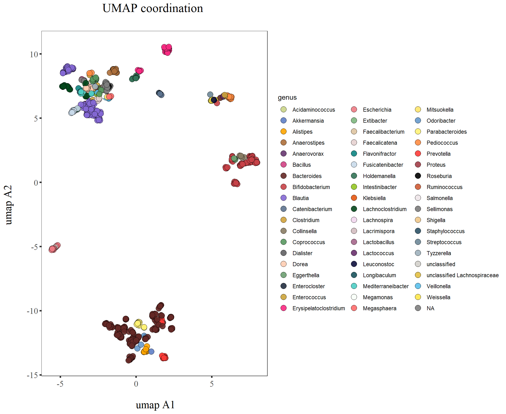
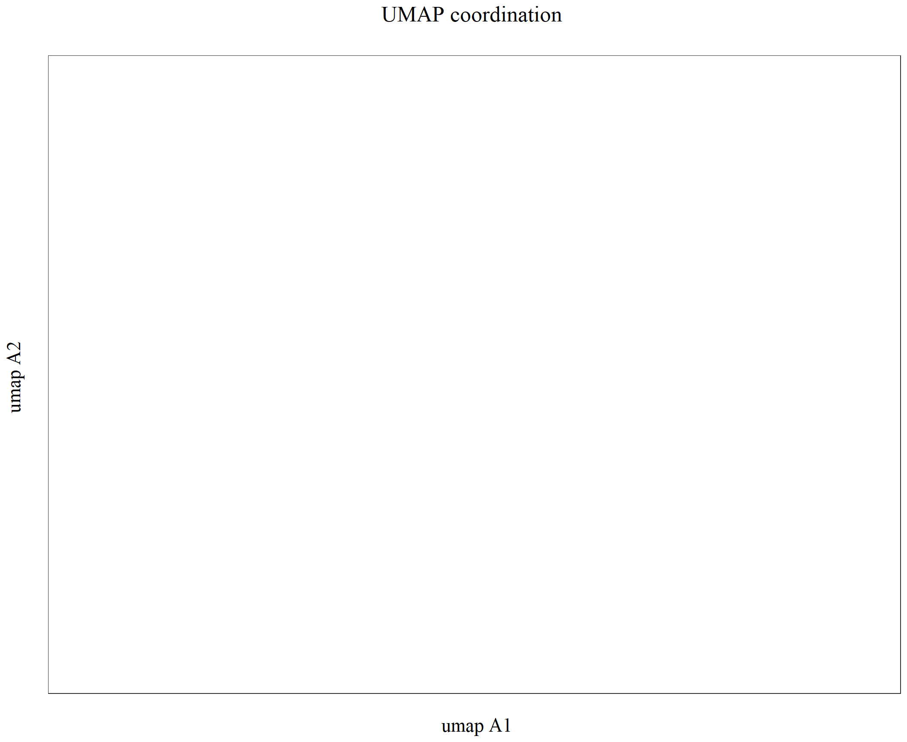
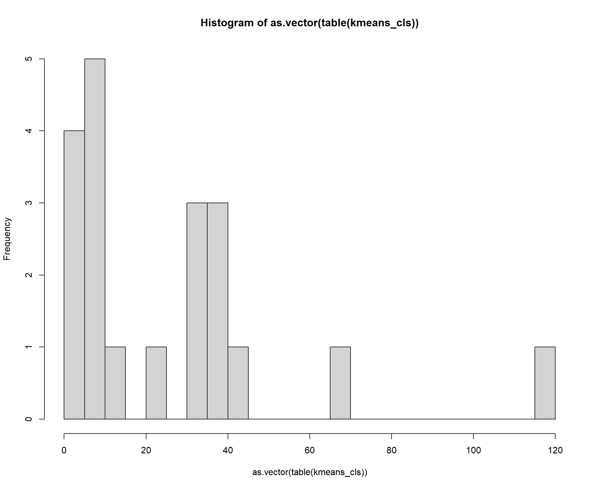
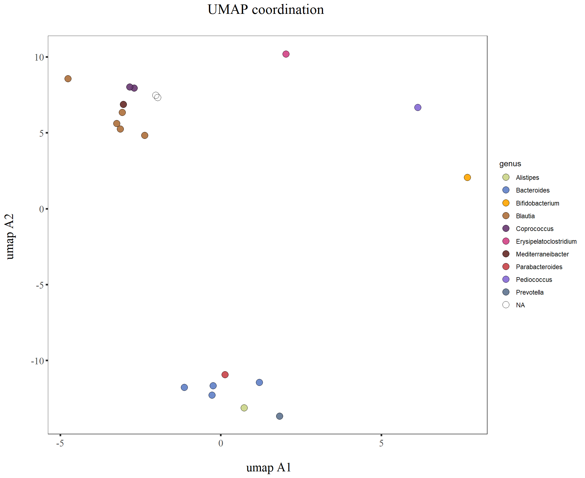
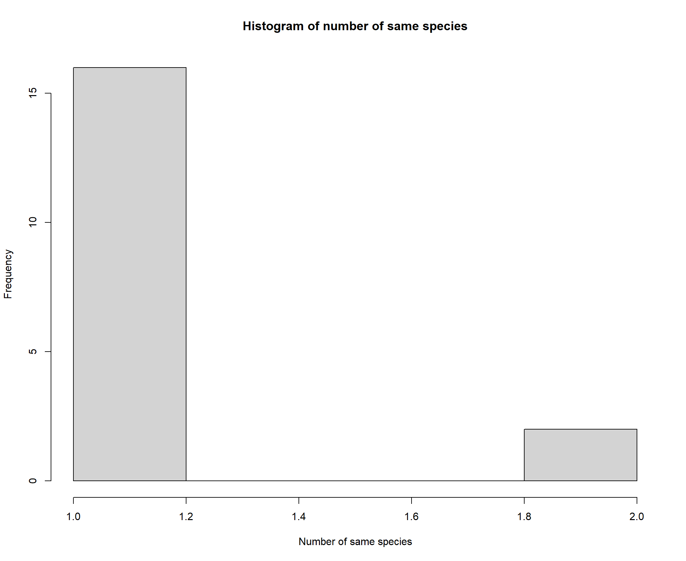
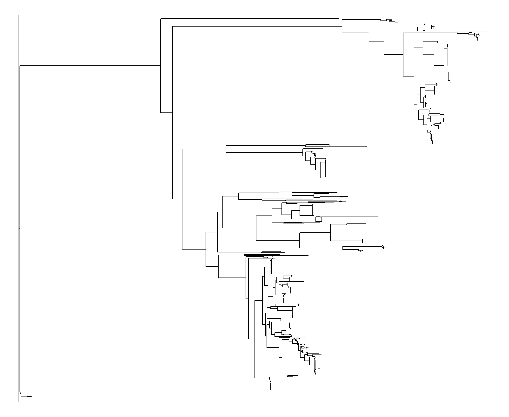
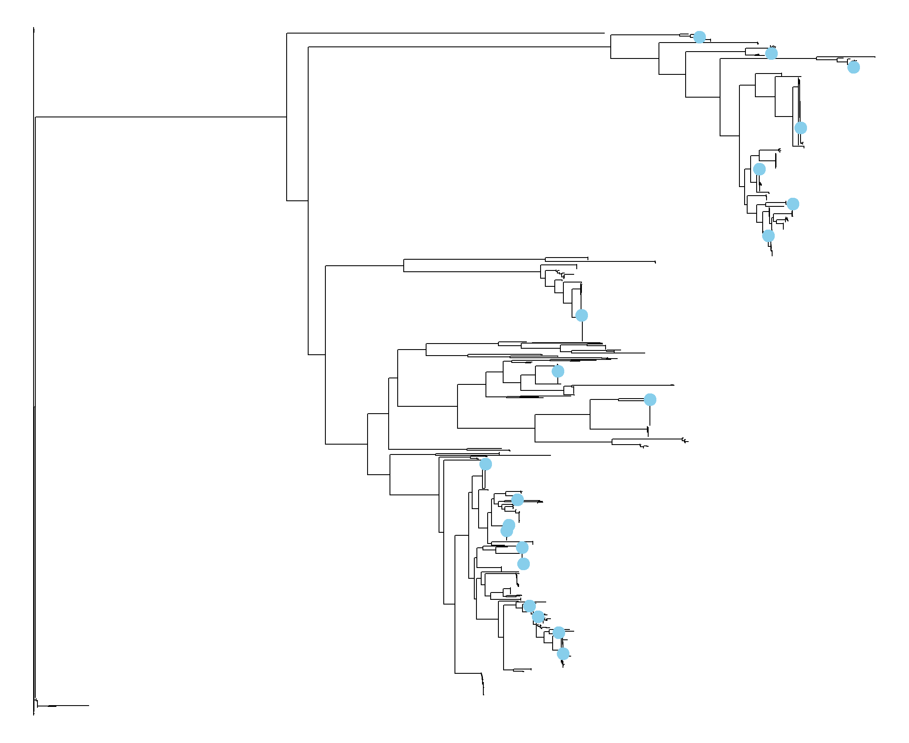
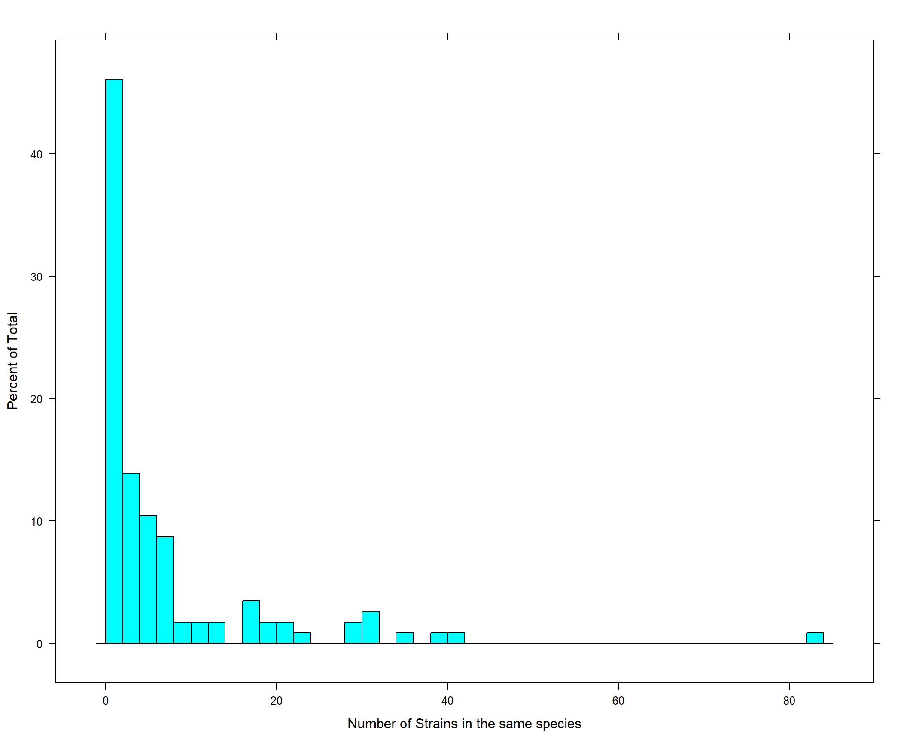
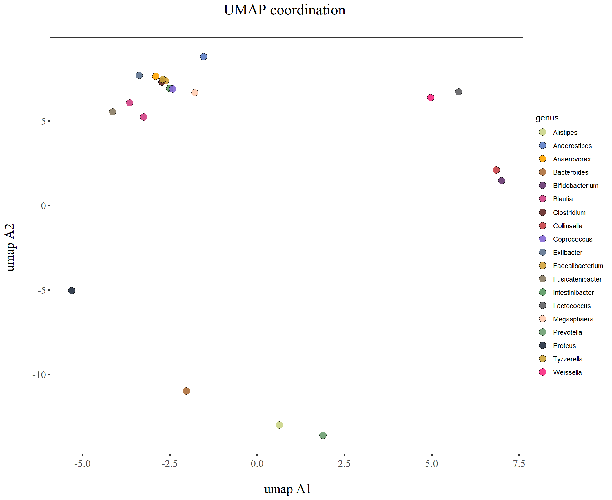
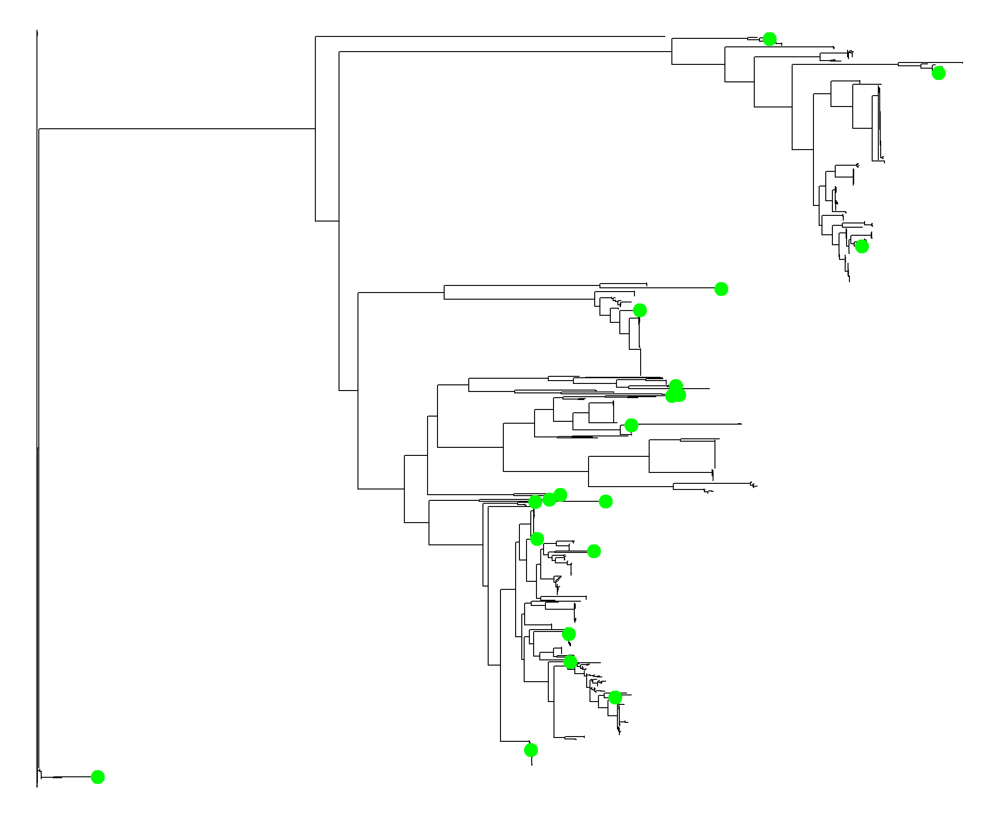

Last updated: 2021-07-15
Checks: 7 0
Knit directory: Kp_suppression/
This reproducible R Markdown analysis was created with workflowr (version 1.6.2). The Checks tab describes the reproducibility checks that were applied when the results were created. The Past versions tab lists the development history.
Great! Since the R Markdown file has been committed to the Git repository, you know the exact version of the code that produced these results.
Great job! The global environment was empty. Objects defined in the global environment can affect the analysis in your R Markdown file in unknown ways. For reproduciblity it’s best to always run the code in an empty environment.
The command set.seed(20210616) was run prior to running the code in the R Markdown file. Setting a seed ensures that any results that rely on randomness, e.g. subsampling or permutations, are reproducible.
Great job! Recording the operating system, R version, and package versions is critical for reproducibility.
Nice! There were no cached chunks for this analysis, so you can be confident that you successfully produced the results during this run.
Great job! Using relative paths to the files within your workflowr project makes it easier to run your code on other machines.
Great! You are using Git for version control. Tracking code development and connecting the code version to the results is critical for reproducibility.
The results in this page were generated with repository version 0c4f8f1. See the Past versions tab to see a history of the changes made to the R Markdown and HTML files.
Note that you need to be careful to ensure that all relevant files for the analysis have been committed to Git prior to generating the results (you can use wflow_publish or wflow_git_commit). workflowr only checks the R Markdown file, but you know if there are other scripts or data files that it depends on. Below is the status of the Git repository when the results were generated:
Ignored files:
Ignored: .Rhistory
Ignored: .Rproj.user/
Untracked files:
Untracked: 20_strain_NRI_table.xlsx
Untracked: 20_strain_NTI_table.xlsx
Untracked: NRI_table.xlsx
Untracked: NTI_table.xlsx
Untracked: Strain_selected_20_kmeans_max_likelihood_distance.xlsx
Untracked: Strain_selected_20_max_NTI.xlsx
Untracked: Strain_selected_20_min_NTI.xlsx
Untracked: Strain_selected_95_max_NTI.xlsx
Untracked: Tree_UMAP_20.pdf
Untracked: Tree_both.pdf
Untracked: Tree_phy.pdf
Untracked: Tree_phy_20.pdf
Untracked: Tree_random_20.pdf
Untracked: Tree_species_95_selected.pdf
Untracked: Tree_strain66.pdf
Untracked: Tree_umap.pdf
Untracked: UMAP_100centroid_kmeans.pdf
Untracked: UMAP_95_species_selected.pdf
Untracked: UMAP_all.pdf
Untracked: UMAP_clustering_kmeans.pdf
Untracked: UMAP_ml_clustering_20.pdf
Untracked: UMAP_random_20.pdf
Untracked: UMAP_strain20_50percentile.pdf
Untracked: UMAP_strain20_max_nearest.pdf
Untracked: UMAP_strain20_meax_mean_nearest.pdf
Untracked: UMAP_strain66.pdf
Untracked: UMAP_umapclustering_100.pdf
Untracked: UMAP_umapclustering_20.pdf
Untracked: analysis/select20_from_66strains.Rmd
Untracked: data/Biobank_align_mafft.fasta.mldist.tsv
Untracked: data/Biobank_align_mafft.fasta.treefile.nwk
Untracked: data/Biobank_align_mafft.fasta.treefile_rooted.nwk
Untracked: data/Strain_selected_95_max_NTI_CEKannotated_updated.xlsx
Untracked: data/biobank.umap.16sSeqs.csv
Untracked: input_for_fasta_conversion.txt
Untracked: ~$NTI_table.xlsx
Unstaged changes:
Modified: analysis/index.Rmd
Note that any generated files, e.g. HTML, png, CSS, etc., are not included in this status report because it is ok for generated content to have uncommitted changes.
These are the previous versions of the repository in which changes were made to the R Markdown (analysis/20_strain_selection.Rmd) and HTML (docs/20_strain_selection.html) files. If you’ve configured a remote Git repository (see ?wflow_git_remote), click on the hyperlinks in the table below to view the files as they were in that past version.
| File | Version | Author | Date | Message |
|---|---|---|---|---|
| html | 0c4f8f1 | KiseokUchicago | 2021-06-30 | Build site. |
| Rmd | a59652e | KiseokUchicago | 2021-06-30 | 20 |
| html | cf9be3d | KiseokUchicago | 2021-06-30 | Build site. |
| Rmd | a91f7ed | KiseokUchicago | 2021-06-30 | 20strain |
Kiseok Lee PI: Seppe Kuehn, Arjun Raman
# libraries
library(dplyr)
library(ggplot2)
library(RColorBrewer)
library(vegan)
library(tidyverse)
library(magrittr)
library(readxl)
library(reshape2)
library(gtools)
library(devtools)
library(openxlsx)
library(ape)
## theme for ggplot
mytheme <- theme_bw() +
theme(plot.title = element_text(size = 19,hjust = 0.5, family="serif")) +
theme(axis.title.x = element_text(size = 17,hjust = 0.5, family="serif")) +
theme(axis.title.y = element_text(size = 17,hjust = 0.5, family="serif")) +
theme(axis.text.x = element_text(hjust = 0.5, vjust=0.3,size=13, family="serif"))+
theme(axis.text.y = element_text(size=10, family="serif"))+
theme(panel.grid.major = element_blank()) +
theme(panel.grid.minor = element_blank(),panel.background=element_blank(),panel.border=element_blank(),plot.background=element_blank()) +
theme(axis.ticks = element_line(size = 1.1))
mytheme_2d <- theme_bw() +
theme(plot.title = element_text(size = 19,hjust = 0.5, family="serif")) +
theme(axis.title.x = element_text(size = 17,hjust = 0.5, family="serif")) +
theme(axis.title.y = element_text(size = 17,hjust = 0.5, family="serif")) +
theme(axis.text.x = element_text(hjust = 0.5, vjust=0.3,size=13, family="serif"))+
theme(axis.text.y = element_text(size=13, family="serif"))+
theme(panel.grid.major = element_blank()) +
theme(panel.grid.minor = element_blank(),panel.background=element_blank(),plot.background=element_blank()) +
theme(axis.ticks = element_line(size = 1.1))
# color collection
my_color_collection <- c(
"#CBD588", "#5F7FC7", "orange", "#AD6F3B", "#673770",
"#D14285", "#652926", "#C84248", "#8569D5", "#5E738F",
"#D1A33D", "#8A7C64", "#599861","#616163", "#FFCDB2",
"#6D9F71", "#242F40",
"#CCA43B", "#F92A82", "#ED7B84", "#7EB77F",
"#DEC4A1", "#E5D1D0", '#0E8482', '#C9DAEA', '#337357',
'#95C623', '#E55812', '#04471C', '#F2D7EE', '#D3BCC0',
'#A5668B', '#69306D', '#0E103D', '#1A535C', '#4ECDC4',
'#F7FFF7', '#FF6B6B', '#FFE66D', '#6699CC', '#FFF275',
'#FF8C42', '#FF3C38', '#A23E48', '#000000', '#CF5C36',
'#EEE5E9', '#7C7C7C', '#EFC88B', '#2E5266', '#6E8898',
'#9FB1BC', '#D3D0CB', '#E2C044', '#5BC0EB', '#FDE74C',
'#9BC53D', '#E55934', '#FA7921', "#CD9BCD", "#508578", "#DA5724")df_Biobank <- read.csv('data/biobank.umap.16sSeqs.csv')
# how many species
df_species <- df_Biobank %>% group_by(species) %>% summarise(number=n_distinct(species))
# get id and sequence
# id is seq_id + species
phylo_Biobank <- df_Biobank %>% unite(phy_id,c("seq_id",'species'),sep="_", remove=F)
phylo_Biobank$species <- gsub("\\[","",phylo_Biobank$species)
phylo_Biobank$species <- gsub("]","",phylo_Biobank$species)
# remove space in the id for downstream
phylo_Biobank$phy_id <- gsub(" ","_",phylo_Biobank$phy_id)
# remove "[" and "]"
phylo_Biobank$phy_id <- gsub("\\[","",phylo_Biobank$phy_id)
phylo_Biobank$phy_id <- gsub("]","",phylo_Biobank$phy_id)
col2_Biobank <- phylo_Biobank %>% dplyr::select(phy_id,nuc_sequence)# UMAP plotting
ggplot(df_Biobank, aes(x=umapA1, y=umapA2)) +
xlab('\n umap A1')+
ylab("umap A2 \n") +
geom_point(aes(fill = genus), shape = 21 ,size=4, alpha=0.9) +
scale_fill_manual(values = my_color_collection)+
ggtitle(paste0("UMAP coordination"," \n")) +
# scale_x_continuous(limits = c(0, max(df_cen_wb$Degree))) +
# scale_y_continuous(limits = c(0, max(df_cen_wb$Betweenness))) +
theme(legend.text=element_text(size=13)) +
# theme(legend.position="top") +
# theme(legend.title=element_blank()) +
guides(colour = guide_legend(override.aes = list(size=8), reverse = TRUE))+
guides(size=FALSE) +
mytheme_2d
plot_UMAP <- function(df_Biobank){
ggplot(df_Biobank, aes(x=umapA1, y=umapA2)) +
xlab('\n umap A1')+
ylab("umap A2 \n") +
geom_point(aes(fill = genus), shape = 21 ,size=4, alpha=0.9) +
scale_fill_manual(values = my_color_collection)+
ggtitle(paste0("UMAP coordination"," \n")) +
# scale_x_continuous(limits = c(0, max(df_cen_wb$Degree))) +
# scale_y_continuous(limits = c(0, max(df_cen_wb$Betweenness))) +
theme(legend.text=element_text(size=13)) +
# theme(legend.position="top") +
# theme(legend.title=element_blank()) +
guides(colour = guide_legend(override.aes = list(size=8), reverse = TRUE))+
guides(size=FALSE) +
mytheme_2d
}First, using the elbow method to find the optimal number of clusters
Within-Cluster-Sum-of-Squares (WCSS) is the sum of squares of the distances of each data point in all clusters to their respective centroids.
The number of strains: 20 clusters
# 20 clusters
n_clu = 20
set.seed(6)
wcss = vector()
for (i in 1:849) wcss[i] = sum(kmeans(k_dataset, i)$withinss)Error in kmeans(k_dataset, i): object 'k_dataset' not foundplot(1:849,
wcss,
type = 'b',
main = paste('The Elbow Method'),
xlab = 'Number of clusters',
ylab = 'WCSS')Error in xy.coords(x, y, xlabel, ylabel, log): 'x' and 'y' lengths differ# WCSS(y axis in log scale)
wcss = vector()
for (i in 1:849) wcss[i] = log(sum(kmeans(k_dataset, i)$withinss))Error in kmeans(k_dataset, i): object 'k_dataset' not foundplot(1:849,
wcss,
type = 'b',
main = paste('The Elbow Method'),
xlab = 'Number of clusters',
ylab = 'log WCSS',
col='maroon')Error in xy.coords(x, y, xlabel, ylabel, log): 'x' and 'y' lengths differ# Fitting K-Means to the dataset
set.seed(29)
kmeans = kmeans(x = k_dataset, centers = n_clu)Error in as.matrix(x): object 'k_dataset' not foundy_kmeans = kmeans$clusterError in kmeans$cluster: object of type 'closure' is not subsettable# Visualising the clusters
library(cluster)
# All observation are represented by points in the plot, using principal components or multidimensional scaling.
clusplot(k_dataset,
y_kmeans,
lines = 0,
shade = TRUE,
color = TRUE,
labels = 0,
plotchar = FALSE,
span = TRUE,
# main = paste('Clusters of strains with UMAP'),
main = NA,
xlab = 'PC1',
ylab = 'PC2') Error in clusplot(k_dataset, y_kmeans, lines = 0, shade = TRUE, color = TRUE, : object 'k_dataset' not found# get the centroid and the closest id's for 100 clusters
kmeans$centersError in kmeans$centers: object of type 'closure' is not subsettablecenter_strains <- vector()
min_ss <- rep(Inf, n_clu) # minimum sum of square of distance from centroid
for (i in 1:n_clu){
print(i)
centroid_xy <- (kmeans$centers)[i,]
for (j in 1:dim(k_dataset)[1]){
point_xy <- k_dataset[j,]
ss <- sum((centroid_xy - point_xy)^2)
if (ss < min_ss[i]){
min_ss[i] <- ss
center_strains[i] <- rownames(k_dataset[j,])
# print(center_strains[i])
}
}
}[1] 1Error: object of type 'closure' is not subsettablekmeans$cluster[center_strains] # center strains belong to each clusterError in kmeans$cluster: object of type 'closure' is not subsettablecenter_strains # confirmedlogical(0)length(center_strains)[1] 0# Plot UMAP with cluster center strains
plot_UMAP(phylo_Biobank %>% filter(phy_id %in% center_strains))
# number of species
df_center_umap <- phylo_Biobank %>% filter(phy_id %in% center_strains)
df_center_umap %>% dplyr::select(species) %>% unique() %>% dim() # 19 species[1] 0 1df_center_umap %>% dplyr::select(genus) %>% unique() %>% dim() # 13[1] 0 1df_center_umap %>% dplyr::select(family) %>% unique() %>% dim() # 8[1] 0 1df_center_umap %>% dplyr::select(order) %>% unique() %>% dim() # 5[1] 0 1df_center_umap %>% dplyr::select(class) %>% unique() %>% dim() # 5[1] 0 1df_center_umap %>% dplyr::select(phylum) %>% unique() %>% dim() # 4[1] 0 1df_umap_distinct <- df_center_umap %>% count(species)
hist(df_umap_distinct$n, main="Histogram of number of same species", xlab="Number of same species")Error in hist.default(df_umap_distinct$n, main = "Histogram of number of same species", : invalid number of 'breaks'Import tree
phy_tree <- ape::read.tree("data/Biobank_align_mafft.fasta.treefile_rooted.nwk")
phy_tree
Phylogenetic tree with 850 tips and 849 internal nodes.
Tip labels:
210119-DFI.3.32_Escherichia_fergusonii, EP-10S-DFI-2-08_Escherichia_fergusonii, MSK5_13_Shigella_sonnei, MSK17_69_Escherichia_fergusonii, 210309-SL2.01_Escherichia_fergusonii, MSK14_41_Escherichia_fergusonii, ...
Rooted; includes branch lengths.# input tab delimited table
ml_dist <- read.table("data/Biobank_align_mafft.fasta.mldist.tsv", sep="\t", header = F)
# head(ml_dist)
# set row and column name
ml_dist %<>% dplyr::select(-V531)
dim(ml_dist)[1] 529 530colnames(ml_dist) [1] "V1" "V2" "V3" "V4" "V5" "V6" "V7" "V8" "V9" "V10"
[11] "V11" "V12" "V13" "V14" "V15" "V16" "V17" "V18" "V19" "V20"
[21] "V21" "V22" "V23" "V24" "V25" "V26" "V27" "V28" "V29" "V30"
[31] "V31" "V32" "V33" "V34" "V35" "V36" "V37" "V38" "V39" "V40"
[41] "V41" "V42" "V43" "V44" "V45" "V46" "V47" "V48" "V49" "V50"
[51] "V51" "V52" "V53" "V54" "V55" "V56" "V57" "V58" "V59" "V60"
[61] "V61" "V62" "V63" "V64" "V65" "V66" "V67" "V68" "V69" "V70"
[71] "V71" "V72" "V73" "V74" "V75" "V76" "V77" "V78" "V79" "V80"
[81] "V81" "V82" "V83" "V84" "V85" "V86" "V87" "V88" "V89" "V90"
[91] "V91" "V92" "V93" "V94" "V95" "V96" "V97" "V98" "V99" "V100"
[101] "V101" "V102" "V103" "V104" "V105" "V106" "V107" "V108" "V109" "V110"
[111] "V111" "V112" "V113" "V114" "V115" "V116" "V117" "V118" "V119" "V120"
[121] "V121" "V122" "V123" "V124" "V125" "V126" "V127" "V128" "V129" "V130"
[131] "V131" "V132" "V133" "V134" "V135" "V136" "V137" "V138" "V139" "V140"
[141] "V141" "V142" "V143" "V144" "V145" "V146" "V147" "V148" "V149" "V150"
[151] "V151" "V152" "V153" "V154" "V155" "V156" "V157" "V158" "V159" "V160"
[161] "V161" "V162" "V163" "V164" "V165" "V166" "V167" "V168" "V169" "V170"
[171] "V171" "V172" "V173" "V174" "V175" "V176" "V177" "V178" "V179" "V180"
[181] "V181" "V182" "V183" "V184" "V185" "V186" "V187" "V188" "V189" "V190"
[191] "V191" "V192" "V193" "V194" "V195" "V196" "V197" "V198" "V199" "V200"
[201] "V201" "V202" "V203" "V204" "V205" "V206" "V207" "V208" "V209" "V210"
[211] "V211" "V212" "V213" "V214" "V215" "V216" "V217" "V218" "V219" "V220"
[221] "V221" "V222" "V223" "V224" "V225" "V226" "V227" "V228" "V229" "V230"
[231] "V231" "V232" "V233" "V234" "V235" "V236" "V237" "V238" "V239" "V240"
[241] "V241" "V242" "V243" "V244" "V245" "V246" "V247" "V248" "V249" "V250"
[251] "V251" "V252" "V253" "V254" "V255" "V256" "V257" "V258" "V259" "V260"
[261] "V261" "V262" "V263" "V264" "V265" "V266" "V267" "V268" "V269" "V270"
[271] "V271" "V272" "V273" "V274" "V275" "V276" "V277" "V278" "V279" "V280"
[281] "V281" "V282" "V283" "V284" "V285" "V286" "V287" "V288" "V289" "V290"
[291] "V291" "V292" "V293" "V294" "V295" "V296" "V297" "V298" "V299" "V300"
[301] "V301" "V302" "V303" "V304" "V305" "V306" "V307" "V308" "V309" "V310"
[311] "V311" "V312" "V313" "V314" "V315" "V316" "V317" "V318" "V319" "V320"
[321] "V321" "V322" "V323" "V324" "V325" "V326" "V327" "V328" "V329" "V330"
[331] "V331" "V332" "V333" "V334" "V335" "V336" "V337" "V338" "V339" "V340"
[341] "V341" "V342" "V343" "V344" "V345" "V346" "V347" "V348" "V349" "V350"
[351] "V351" "V352" "V353" "V354" "V355" "V356" "V357" "V358" "V359" "V360"
[361] "V361" "V362" "V363" "V364" "V365" "V366" "V367" "V368" "V369" "V370"
[371] "V371" "V372" "V373" "V374" "V375" "V376" "V377" "V378" "V379" "V380"
[381] "V381" "V382" "V383" "V384" "V385" "V386" "V387" "V388" "V389" "V390"
[391] "V391" "V392" "V393" "V394" "V395" "V396" "V397" "V398" "V399" "V400"
[401] "V401" "V402" "V403" "V404" "V405" "V406" "V407" "V408" "V409" "V410"
[411] "V411" "V412" "V413" "V414" "V415" "V416" "V417" "V418" "V419" "V420"
[421] "V421" "V422" "V423" "V424" "V425" "V426" "V427" "V428" "V429" "V430"
[431] "V431" "V432" "V433" "V434" "V435" "V436" "V437" "V438" "V439" "V440"
[441] "V441" "V442" "V443" "V444" "V445" "V446" "V447" "V448" "V449" "V450"
[451] "V451" "V452" "V453" "V454" "V455" "V456" "V457" "V458" "V459" "V460"
[461] "V461" "V462" "V463" "V464" "V465" "V466" "V467" "V468" "V469" "V470"
[471] "V471" "V472" "V473" "V474" "V475" "V476" "V477" "V478" "V479" "V480"
[481] "V481" "V482" "V483" "V484" "V485" "V486" "V487" "V488" "V489" "V490"
[491] "V491" "V492" "V493" "V494" "V495" "V496" "V497" "V498" "V499" "V500"
[501] "V501" "V502" "V503" "V504" "V505" "V506" "V507" "V508" "V509" "V510"
[511] "V511" "V512" "V513" "V514" "V515" "V516" "V517" "V518" "V519" "V520"
[521] "V521" "V522" "V523" "V524" "V525" "V526" "V527" "V528" "V529" "V530"tibble::column_to_rownames(ml_dist, var="V1") %>% dim()[1] 529 529mat_dist <- tibble::column_to_rownames(ml_dist, var="V1")
colnames(mat_dist) <- rownames(mat_dist)
dim(mat_dist)[1] 529 529mat_dist <- as.matrix(mat_dist)20 clusters
# distance matrix has 529 x 529 dimension
library(FCPS)
n_clu = 20
kmeans_20 <- kmeansClustering(mat_dist, ClusterNo=n_clu, RandomNo=1, PlotIt= T, Verbose = T)[1] "Starting iteration 1"
[1] "Starting iteration 2"
[1] "Starting iteration 3"
[1] "Starting iteration 4"
[1] "Starting iteration 5"
[1] "Starting iteration 6"
[1] "Starting iteration 7"kmeans_cls <- kmeans_20$Cls
table(kmeans_cls)kmeans_cls
1 2 3 4 5 6 7 8 9 10 11 12 13 14 15 16 17 18 19 20
31 39 5 24 5 70 8 3 34 9 38 34 118 6 11 39 42 6 1 6 # Histogram of # of strains belonging to each cluster
hist(as.vector(table(kmeans_cls)), breaks=n_clu)
# Let's get the list of center ids
# kmeans_20
kmeans_20$centerids [1] 403 437 453 21 454 121 272 423 351 410 142 484 82 266 493 38 295 444 448
[20] 281phy_id_list <- names(kmeans_cls[kmeans_20$centerids])
# function to get the centroid ids
get_centroids <- function(mat_dist, num_cluster=100){
kmeans_20 <- kmeansClustering(mat_dist, ClusterNo=num_cluster, RandomNo=1, PlotIt= T, Verbose = T)
kmeans_cls <- kmeans_20$Cls
table(kmeans_cls)
# Let's get the list of center ids
phy_id_list <- names(kmeans_cls[kmeans_20$centerids])
return(phy_id_list)
}
# get 100 centroids and plot UMAP
phy_id_list <- get_centroids(mat_dist, num_cluster=20)[1] "Starting iteration 1"
[1] "Starting iteration 2"
[1] "Starting iteration 3"
[1] "Starting iteration 4"
[1] "Starting iteration 5"df_centroid_20 <- phylo_Biobank %>% filter(phy_id %in% phy_id_list)
plot_UMAP(phylo_Biobank %>% filter(phy_id %in% phy_id_list))
# number of species, genus, family,...
df_center_phy <- phylo_Biobank %>% filter(phy_id %in% phy_id_list)
df_center_phy %>% dplyr::select(species) %>% unique() %>% dim() # 19 species[1] 18 1df_center_phy %>% dplyr::select(genus) %>% unique() %>% dim() # 14[1] 11 1df_center_phy %>% dplyr::select(family) %>% unique() %>% dim() # 9[1] 8 1df_center_phy %>% dplyr::select(order) %>% unique() %>% dim() # 6[1] 5 1df_center_phy %>% dplyr::select(class) %>% unique() %>% dim() # 6[1] 5 1df_center_phy %>% dplyr::select(phylum) %>% unique() %>% dim() # 3[1] 3 1df_phy_distinct <- df_center_phy %>% count(species)
hist(df_phy_distinct$n, main="Histogram of number of same species", xlab="Number of same species")
# See what species the centerids are
phylo_Biobank %>% filter(phy_id %in% phy_id_list) %>% dplyr::select(phy_id, species) %>% arrange(species) phy_id species
1 210215-DFI.2.31_Alistipes_finegoldii Alistipes finegoldii
2 TM242_Bacteroides_fragilis Bacteroides fragilis
3 MSK18_2_Bacteroides_thetaiotaomicron Bacteroides thetaiotaomicron
4 MSK18_30_Bacteroides_uniformis Bacteroides uniformis
5 MSK22_36_Bacteroides_vulgatus Bacteroides vulgatus
6 MSK19_51_Bifidobacterium_longum Bifidobacterium longum
7 TM100_Blautia_faecis Blautia faecis
8 MSK20_9_Blautia_luti Blautia luti
9 TM174_Blautia_obeum Blautia obeum
10 MSK23_75_Blautia_wexlerae Blautia wexlerae
11 MSK18_76_Coprococcus_comes Coprococcus comes
12 TM467_Coprococcus_comes Coprococcus comes
13 TM490_Erysipelatoclostridium_ramosum Erysipelatoclostridium ramosum
14 TM367_Eubacterium_rectale Eubacterium rectale
15 TM426_Eubacterium_rectale Eubacterium rectale
16 210120-DFI.1.37_Parabacteroides_distasonis Parabacteroides distasonis
17 MSK2_77_Pediococcus_unclassified Pediococcus unclassified
18 MSK21_64_Prevotella_copri Prevotella copri
19 MSK23_60_Ruminococcus_gnavus Ruminococcus gnavus
20 MSK17_20_Ruminococcus_lactaris Ruminococcus lactarisNow we will calculate NRI (Net Relatedness Index) and NTI (Nearest Taxon Index) for our different communities. Rembember, negative NRI and NTI values indicate a high level of phylogenetic overdispersion, and positive NRI and NTI values indicate phylogenetic clustering.
- Source: http://ib.berkeley.edu/courses/ib200/2016/labs/14/lab14.R
- Source2: http://ib.berkeley.edu/courses/ib200b/labs/lab16/ib200b_lab16_phylocomm.pdf
- Paper: Horner-Devine, M. C., & Bohannan, B. J. (2006). Phylogenetic clustering and overdispersion in bacterial communities. Ecology, 87(sp7), S100-S108. https://esajournals.onlinelibrary.wiley.com/doi/10.1890/0012-9658%282006%2987%5B100%3APCAOIB%5D2.0.CO%3B2
# PICANTE R package
# install.packages("picante")
library(picante)
# strain list for 2 different methods
# (Method 1) UMAP method
strains_umap <- center_strains
# (Method 2) Phylogenetic tree method
strains_phy <- phy_id_list
# Let's visualize our data. Now let's see how taxa from the 2 communities from different methods arranged on the tree.
phy_tree
Phylogenetic tree with 850 tips and 849 internal nodes.
Tip labels:
210119-DFI.3.32_Escherichia_fergusonii, EP-10S-DFI-2-08_Escherichia_fergusonii, MSK5_13_Shigella_sonnei, MSK17_69_Escherichia_fergusonii, 210309-SL2.01_Escherichia_fergusonii, MSK14_41_Escherichia_fergusonii, ...
Rooted; includes branch lengths.phy_tree$edge [,1] [,2]
[1,] 851 852
[2,] 852 1
[3,] 852 853
[4,] 853 854
[5,] 854 855
[6,] 855 2
[7,] 855 856
[8,] 856 857
[9,] 857 858
[10,] 858 3
[11,] 858 4
[12,] 857 5
[13,] 856 859
[14,] 859 860
[15,] 860 861
[16,] 861 862
[17,] 862 863
[18,] 863 864
[19,] 864 6
[20,] 864 7
[21,] 863 8
[22,] 862 9
[23,] 861 10
[24,] 860 865
[25,] 865 866
[26,] 866 867
[27,] 867 868
[28,] 868 869
[29,] 869 870
[30,] 870 871
[31,] 871 11
[32,] 871 872
[33,] 872 12
[34,] 872 13
[35,] 870 14
[36,] 869 15
[37,] 868 873
[38,] 873 874
[39,] 874 16
[40,] 874 17
[41,] 873 18
[42,] 867 19
[43,] 866 20
[44,] 865 875
[45,] 875 21
[46,] 875 22
[47,] 859 876
[48,] 876 877
[49,] 877 878
[50,] 878 23
[51,] 878 24
[52,] 877 25
[53,] 876 879
[54,] 879 880
[55,] 880 881
[56,] 881 882
[57,] 882 883
[58,] 883 884
[59,] 884 885
[60,] 885 886
[61,] 886 887
[62,] 887 888
[63,] 888 889
[64,] 889 890
[65,] 890 891
[66,] 891 892
[67,] 892 893
[68,] 893 894
[69,] 894 895
[70,] 895 896
[71,] 896 897
[72,] 897 898
[73,] 898 26
[74,] 898 899
[75,] 899 900
[76,] 900 901
[77,] 901 902
[78,] 902 903
[79,] 903 904
[80,] 904 905
[81,] 905 27
[82,] 905 28
[83,] 904 29
[84,] 903 30
[85,] 902 31
[86,] 901 32
[87,] 900 906
[88,] 906 33
[89,] 906 34
[90,] 899 907
[91,] 907 35
[92,] 907 908
[93,] 908 36
[94,] 908 909
[95,] 909 37
[96,] 909 38
[97,] 897 39
[98,] 896 40
[99,] 895 910
[100,] 910 41
[101,] 910 42
[102,] 894 43
[103,] 893 44
[104,] 892 911
[105,] 911 912
[106,] 912 913
[107,] 913 914
[108,] 914 45
[109,] 914 46
[110,] 913 47
[111,] 912 48
[112,] 911 49
[113,] 891 50
[114,] 890 51
[115,] 889 52
[116,] 888 53
[117,] 887 54
[118,] 886 915
[119,] 915 916
[120,] 916 917
[121,] 917 918
[122,] 918 919
[123,] 919 920
[124,] 920 921
[125,] 921 55
[126,] 921 56
[127,] 920 922
[128,] 922 923
[129,] 923 57
[130,] 923 58
[131,] 922 59
[132,] 919 924
[133,] 924 925
[134,] 925 926
[135,] 926 927
[136,] 927 928
[137,] 928 929
[138,] 929 930
[139,] 930 931
[140,] 931 932
[141,] 932 933
[142,] 933 934
[143,] 934 935
[144,] 935 936
[145,] 936 937
[146,] 937 60
[147,] 937 938
[148,] 938 61
[149,] 938 939
[150,] 939 62
[151,] 939 940
[152,] 940 941
[153,] 941 942
[154,] 942 63
[155,] 942 64
[156,] 941 65
[157,] 940 943
[158,] 943 66
[159,] 943 67
[160,] 936 68
[161,] 935 69
[162,] 934 944
[163,] 944 945
[164,] 945 946
[165,] 946 947
[166,] 947 948
[167,] 948 949
[168,] 949 950
[169,] 950 70
[170,] 950 951
[171,] 951 952
[172,] 952 71
[173,] 952 72
[174,] 951 73
[175,] 949 953
[176,] 953 954
[177,] 954 955
[178,] 955 956
[179,] 956 957
[180,] 957 958
[181,] 958 959
[182,] 959 960
[183,] 960 74
[184,] 960 961
[185,] 961 75
[186,] 961 76
[187,] 959 77
[188,] 958 78
[189,] 957 79
[190,] 956 80
[191,] 955 962
[192,] 962 963
[193,] 963 964
[194,] 964 965
[195,] 965 966
[196,] 966 967
[197,] 967 968
[198,] 968 81
[199,] 968 82
[200,] 967 83
[201,] 966 84
[202,] 965 85
[203,] 964 86
[204,] 963 87
[205,] 962 88
[206,] 954 89
[207,] 953 90
[208,] 948 91
[209,] 947 92
[210,] 946 969
[211,] 969 93
[212,] 969 94
[213,] 945 970
[214,] 970 971
[215,] 971 95
[216,] 971 96
[217,] 970 97
[218,] 944 98
[219,] 933 99
[220,] 932 972
[221,] 972 973
[222,] 973 100
[223,] 973 974
[224,] 974 975
[225,] 975 101
[226,] 975 102
[227,] 974 976
[228,] 976 103
[229,] 976 977
[230,] 977 978
[231,] 978 104
[232,] 978 105
[233,] 977 106
[234,] 972 107
[235,] 931 979
[236,] 979 980
[237,] 980 981
[238,] 981 108
[239,] 981 982
[240,] 982 109
[241,] 982 110
[242,] 980 983
[243,] 983 984
[244,] 984 111
[245,] 984 112
[246,] 983 113
[247,] 979 114
[248,] 930 985
[249,] 985 986
[250,] 986 987
[251,] 987 988
[252,] 988 989
[253,] 989 115
[254,] 989 116
[255,] 988 117
[256,] 987 990
[257,] 990 991
[258,] 991 118
[259,] 991 992
[260,] 992 119
[261,] 992 120
[262,] 990 121
[263,] 986 122
[264,] 985 123
[265,] 929 124
[266,] 928 993
[267,] 993 994
[268,] 994 995
[269,] 995 125
[270,] 995 126
[271,] 994 127
[272,] 993 128
[273,] 927 129
[274,] 926 996
[275,] 996 997
[276,] 997 130
[277,] 997 131
[278,] 996 132
[279,] 925 998
[280,] 998 999
[281,] 999 1000
[282,] 1000 1001
[283,] 1001 133
[284,] 1001 134
[285,] 1000 1002
[286,] 1002 135
[287,] 1002 1003
[288,] 1003 136
[289,] 1003 137
[290,] 999 1004
[291,] 1004 138
[292,] 1004 139
[293,] 998 140
[294,] 924 141
[295,] 918 142
[296,] 917 1005
[297,] 1005 1006
[298,] 1006 1007
[299,] 1007 1008
[300,] 1008 143
[301,] 1008 1009
[302,] 1009 1010
[303,] 1010 144
[304,] 1010 145
[305,] 1009 146
[306,] 1007 1011
[307,] 1011 1012
[308,] 1012 147
[309,] 1012 1013
[310,] 1013 148
[311,] 1013 1014
[312,] 1014 149
[313,] 1014 150
[314,] 1011 1015
[315,] 1015 1016
[316,] 1016 1017
[317,] 1017 151
[318,] 1017 1018
[319,] 1018 152
[320,] 1018 1019
[321,] 1019 1020
[322,] 1020 153
[323,] 1020 154
[324,] 1019 1021
[325,] 1021 1022
[326,] 1022 155
[327,] 1022 156
[328,] 1021 157
[329,] 1016 158
[330,] 1015 159
[331,] 1006 1023
[332,] 1023 1024
[333,] 1024 1025
[334,] 1025 1026
[335,] 1026 1027
[336,] 1027 1028
[337,] 1028 1029
[338,] 1029 160
[339,] 1029 1030
[340,] 1030 1031
[341,] 1031 161
[342,] 1031 162
[343,] 1030 163
[344,] 1028 164
[345,] 1027 1032
[346,] 1032 1033
[347,] 1033 1034
[348,] 1034 1035
[349,] 1035 1036
[350,] 1036 1037
[351,] 1037 1038
[352,] 1038 1039
[353,] 1039 165
[354,] 1039 166
[355,] 1038 167
[356,] 1037 168
[357,] 1036 169
[358,] 1035 170
[359,] 1034 171
[360,] 1033 172
[361,] 1032 173
[362,] 1026 174
[363,] 1025 175
[364,] 1024 176
[365,] 1023 177
[366,] 1005 178
[367,] 916 1040
[368,] 1040 1041
[369,] 1041 1042
[370,] 1042 1043
[371,] 1043 1044
[372,] 1044 1045
[373,] 1045 179
[374,] 1045 180
[375,] 1044 181
[376,] 1043 182
[377,] 1042 183
[378,] 1041 1046
[379,] 1046 184
[380,] 1046 185
[381,] 1040 1047
[382,] 1047 1048
[383,] 1048 1049
[384,] 1049 1050
[385,] 1050 1051
[386,] 1051 1052
[387,] 1052 1053
[388,] 1053 186
[389,] 1053 187
[390,] 1052 1054
[391,] 1054 1055
[392,] 1055 1056
[393,] 1056 188
[394,] 1056 189
[395,] 1055 190
[396,] 1054 191
[397,] 1051 192
[398,] 1050 1057
[399,] 1057 1058
[400,] 1058 1059
[401,] 1059 1060
[402,] 1060 1061
[403,] 1061 1062
[404,] 1062 1063
[405,] 1063 1064
[406,] 1064 193
[407,] 1064 194
[408,] 1063 195
[409,] 1062 196
[410,] 1061 197
[411,] 1060 198
[412,] 1059 199
[413,] 1058 200
[414,] 1057 201
[415,] 1049 1065
[416,] 1065 1066
[417,] 1066 1067
[418,] 1067 1068
[419,] 1068 1069
[420,] 1069 202
[421,] 1069 203
[422,] 1068 204
[423,] 1067 205
[424,] 1066 1070
[425,] 1070 206
[426,] 1070 207
[427,] 1065 208
[428,] 1048 209
[429,] 1047 210
[430,] 915 1071
[431,] 1071 1072
[432,] 1072 1073
[433,] 1073 1074
[434,] 1074 211
[435,] 1074 1075
[436,] 1075 1076
[437,] 1076 1077
[438,] 1077 1078
[439,] 1078 212
[440,] 1078 213
[441,] 1077 214
[442,] 1076 215
[443,] 1075 216
[444,] 1073 1079
[445,] 1079 1080
[446,] 1080 1081
[447,] 1081 1082
[448,] 1082 1083
[449,] 1083 1084
[450,] 1084 1085
[451,] 1085 1086
[452,] 1086 1087
[453,] 1087 217
[454,] 1087 218
[455,] 1086 1088
[456,] 1088 219
[457,] 1088 220
[458,] 1085 1089
[459,] 1089 1090
[460,] 1090 1091
[461,] 1091 221
[462,] 1091 222
[463,] 1090 1092
[464,] 1092 1093
[465,] 1093 1094
[466,] 1094 223
[467,] 1094 224
[468,] 1093 225
[469,] 1092 1095
[470,] 1095 226
[471,] 1095 227
[472,] 1089 228
[473,] 1084 229
[474,] 1083 230
[475,] 1082 231
[476,] 1081 1096
[477,] 1096 232
[478,] 1096 1097
[479,] 1097 233
[480,] 1097 1098
[481,] 1098 234
[482,] 1098 1099
[483,] 1099 1100
[484,] 1100 235
[485,] 1100 236
[486,] 1099 237
[487,] 1080 238
[488,] 1079 1101
[489,] 1101 1102
[490,] 1102 1103
[491,] 1103 1104
[492,] 1104 1105
[493,] 1105 1106
[494,] 1106 1107
[495,] 1107 1108
[496,] 1108 1109
[497,] 1109 1110
[498,] 1110 1111
[499,] 1111 1112
[500,] 1112 1113
[501,] 1113 239
[502,] 1113 1114
[503,] 1114 240
[504,] 1114 241
[505,] 1112 1115
[506,] 1115 1116
[507,] 1116 1117
[508,] 1117 242
[509,] 1117 243
[510,] 1116 244
[511,] 1115 245
[512,] 1111 246
[513,] 1110 247
[514,] 1109 248
[515,] 1108 249
[516,] 1107 250
[517,] 1106 1118
[518,] 1118 1119
[519,] 1119 251
[520,] 1119 252
[521,] 1118 253
[522,] 1105 1120
[523,] 1120 254
[524,] 1120 255
[525,] 1104 1121
[526,] 1121 1122
[527,] 1122 256
[528,] 1122 1123
[529,] 1123 1124
[530,] 1124 257
[531,] 1124 258
[532,] 1123 259
[533,] 1121 260
[534,] 1103 1125
[535,] 1125 261
[536,] 1125 262
[537,] 1102 1126
[538,] 1126 1127
[539,] 1127 1128
[540,] 1128 263
[541,] 1128 264
[542,] 1127 265
[543,] 1126 266
[544,] 1101 1129
[545,] 1129 1130
[546,] 1130 1131
[547,] 1131 1132
[548,] 1132 1133
[549,] 1133 267
[550,] 1133 268
[551,] 1132 269
[552,] 1131 1134
[553,] 1134 1135
[554,] 1135 1136
[555,] 1136 270
[556,] 1136 271
[557,] 1135 272
[558,] 1134 273
[559,] 1130 274
[560,] 1129 1137
[561,] 1137 1138
[562,] 1138 1139
[563,] 1139 275
[564,] 1139 276
[565,] 1138 277
[566,] 1137 278
[567,] 1072 1140
[568,] 1140 279
[569,] 1140 280
[570,] 1071 1141
[571,] 1141 281
[572,] 1141 1142
[573,] 1142 1143
[574,] 1143 1144
[575,] 1144 1145
[576,] 1145 1146
[577,] 1146 1147
[578,] 1147 1148
[579,] 1148 1149
[580,] 1149 1150
[581,] 1150 1151
[582,] 1151 1152
[583,] 1152 1153
[584,] 1153 1154
[585,] 1154 1155
[586,] 1155 1156
[587,] 1156 1157
[588,] 1157 1158
[589,] 1158 1159
[590,] 1159 1160
[591,] 1160 1161
[592,] 1161 1162
[593,] 1162 1163
[594,] 1163 282
[595,] 1163 283
[596,] 1162 284
[597,] 1161 285
[598,] 1160 286
[599,] 1159 287
[600,] 1158 288
[601,] 1157 289
[602,] 1156 290
[603,] 1155 291
[604,] 1154 292
[605,] 1153 293
[606,] 1152 294
[607,] 1151 295
[608,] 1150 296
[609,] 1149 297
[610,] 1148 298
[611,] 1147 299
[612,] 1146 300
[613,] 1145 1164
[614,] 1164 301
[615,] 1164 302
[616,] 1144 1165
[617,] 1165 303
[618,] 1165 304
[619,] 1143 1166
[620,] 1166 1167
[621,] 1167 1168
[622,] 1168 1169
[623,] 1169 1170
[624,] 1170 1171
[625,] 1171 1172
[626,] 1172 1173
[627,] 1173 305
[628,] 1173 306
[629,] 1172 307
[630,] 1171 308
[631,] 1170 309
[632,] 1169 310
[633,] 1168 1174
[634,] 1174 311
[635,] 1174 312
[636,] 1167 313
[637,] 1166 314
[638,] 1142 315
[639,] 885 316
[640,] 884 1175
[641,] 1175 1176
[642,] 1176 1177
[643,] 1177 317
[644,] 1177 318
[645,] 1176 319
[646,] 1175 1178
[647,] 1178 320
[648,] 1178 321
[649,] 883 1179
[650,] 1179 322
[651,] 1179 1180
[652,] 1180 323
[653,] 1180 1181
[654,] 1181 324
[655,] 1181 1182
[656,] 1182 325
[657,] 1182 326
[658,] 882 1183
[659,] 1183 1184
[660,] 1184 1185
[661,] 1185 1186
[662,] 1186 327
[663,] 1186 328
[664,] 1185 329
[665,] 1184 330
[666,] 1183 1187
[667,] 1187 1188
[668,] 1188 1189
[669,] 1189 1190
[670,] 1190 1191
[671,] 1191 1192
[672,] 1192 1193
[673,] 1193 1194
[674,] 1194 331
[675,] 1194 332
[676,] 1193 1195
[677,] 1195 333
[678,] 1195 334
[679,] 1192 335
[680,] 1191 336
[681,] 1190 1196
[682,] 1196 1197
[683,] 1197 1198
[684,] 1198 1199
[685,] 1199 337
[686,] 1199 338
[687,] 1198 1200
[688,] 1200 339
[689,] 1200 340
[690,] 1197 1201
[691,] 1201 341
[692,] 1201 342
[693,] 1196 1202
[694,] 1202 343
[695,] 1202 344
[696,] 1189 1203
[697,] 1203 1204
[698,] 1204 1205
[699,] 1205 345
[700,] 1205 1206
[701,] 1206 1207
[702,] 1207 1208
[703,] 1208 1209
[704,] 1209 1210
[705,] 1210 1211
[706,] 1211 1212
[707,] 1212 1213
[708,] 1213 1214
[709,] 1214 1215
[710,] 1215 346
[711,] 1215 347
[712,] 1214 348
[713,] 1213 349
[714,] 1212 350
[715,] 1211 351
[716,] 1210 352
[717,] 1209 353
[718,] 1208 354
[719,] 1207 1216
[720,] 1216 355
[721,] 1216 356
[722,] 1206 357
[723,] 1204 358
[724,] 1203 1217
[725,] 1217 1218
[726,] 1218 1219
[727,] 1219 1220
[728,] 1220 1221
[729,] 1221 1222
[730,] 1222 1223
[731,] 1223 1224
[732,] 1224 1225
[733,] 1225 1226
[734,] 1226 1227
[735,] 1227 1228
[736,] 1228 1229
[737,] 1229 1230
[738,] 1230 1231
[739,] 1231 1232
[740,] 1232 1233
[741,] 1233 1234
[742,] 1234 1235
[743,] 1235 1236
[744,] 1236 1237
[745,] 1237 1238
[746,] 1238 1239
[747,] 1239 1240
[748,] 1240 1241
[749,] 1241 1242
[750,] 1242 1243
[751,] 1243 1244
[752,] 1244 359
[753,] 1244 360
[754,] 1243 361
[755,] 1242 362
[756,] 1241 363
[757,] 1240 364
[758,] 1239 365
[759,] 1238 366
[760,] 1237 367
[761,] 1236 368
[762,] 1235 369
[763,] 1234 370
[764,] 1233 371
[765,] 1232 372
[766,] 1231 373
[767,] 1230 374
[768,] 1229 375
[769,] 1228 376
[770,] 1227 377
[771,] 1226 378
[772,] 1225 379
[773,] 1224 380
[774,] 1223 381
[775,] 1222 1245
[776,] 1245 382
[777,] 1245 1246
[778,] 1246 383
[779,] 1246 1247
[780,] 1247 384
[781,] 1247 1248
[782,] 1248 385
[783,] 1248 386
[784,] 1221 387
[785,] 1220 388
[786,] 1219 1249
[787,] 1249 389
[788,] 1249 390
[789,] 1218 391
[790,] 1217 392
[791,] 1188 1250
[792,] 1250 1251
[793,] 1251 393
[794,] 1251 1252
[795,] 1252 394
[796,] 1252 395
[797,] 1250 1253
[798,] 1253 1254
[799,] 1254 1255
[800,] 1255 1256
[801,] 1256 396
[802,] 1256 397
[803,] 1255 1257
[804,] 1257 1258
[805,] 1258 1259
[806,] 1259 1260
[807,] 1260 1261
[808,] 1261 1262
[809,] 1262 1263
[810,] 1263 1264
[811,] 1264 1265
[812,] 1265 1266
[813,] 1266 398
[814,] 1266 399
[815,] 1265 400
[816,] 1264 401
[817,] 1263 402
[818,] 1262 403
[819,] 1261 404
[820,] 1260 405
[821,] 1259 406
[822,] 1258 407
[823,] 1257 1267
[824,] 1267 408
[825,] 1267 409
[826,] 1254 1268
[827,] 1268 410
[828,] 1268 1269
[829,] 1269 1270
[830,] 1270 1271
[831,] 1271 1272
[832,] 1272 1273
[833,] 1273 1274
[834,] 1274 1275
[835,] 1275 1276
[836,] 1276 1277
[837,] 1277 1278
[838,] 1278 1279
[839,] 1279 1280
[840,] 1280 1281
[841,] 1281 411
[842,] 1281 412
[843,] 1280 413
[844,] 1279 414
[845,] 1278 415
[846,] 1277 1282
[847,] 1282 1283
[848,] 1283 1284
[849,] 1284 1285
[850,] 1285 1286
[851,] 1286 416
[852,] 1286 417
[853,] 1285 418
[854,] 1284 419
[855,] 1283 420
[856,] 1282 421
[857,] 1276 422
[858,] 1275 423
[859,] 1274 424
[860,] 1273 425
[861,] 1272 426
[862,] 1271 427
[863,] 1270 1287
[864,] 1287 1288
[865,] 1288 1289
[866,] 1289 1290
[867,] 1290 1291
[868,] 1291 1292
[869,] 1292 428
[870,] 1292 429
[871,] 1291 430
[872,] 1290 431
[873,] 1289 432
[874,] 1288 433
[875,] 1287 434
[876,] 1269 435
[877,] 1253 1293
[878,] 1293 1294
[879,] 1294 436
[880,] 1294 437
[881,] 1293 1295
[882,] 1295 1296
[883,] 1296 438
[884,] 1296 439
[885,] 1295 440
[886,] 1187 1297
[887,] 1297 1298
[888,] 1298 1299
[889,] 1299 1300
[890,] 1300 1301
[891,] 1301 441
[892,] 1301 442
[893,] 1300 443
[894,] 1299 1302
[895,] 1302 444
[896,] 1302 445
[897,] 1298 1303
[898,] 1303 446
[899,] 1303 447
[900,] 1297 1304
[901,] 1304 1305
[902,] 1305 1306
[903,] 1306 1307
[904,] 1307 448
[905,] 1307 1308
[906,] 1308 1309
[907,] 1309 1310
[908,] 1310 449
[909,] 1310 450
[910,] 1309 451
[911,] 1308 452
[912,] 1306 1311
[913,] 1311 1312
[914,] 1312 1313
[915,] 1313 1314
[916,] 1314 1315
[917,] 1315 1316
[918,] 1316 453
[919,] 1316 454
[920,] 1315 455
[921,] 1314 456
[922,] 1313 457
[923,] 1312 458
[924,] 1311 459
[925,] 1305 1317
[926,] 1317 460
[927,] 1317 461
[928,] 1304 462
[929,] 881 1318
[930,] 1318 1319
[931,] 1319 1320
[932,] 1320 1321
[933,] 1321 1322
[934,] 1322 1323
[935,] 1323 1324
[936,] 1324 1325
[937,] 1325 1326
[938,] 1326 1327
[939,] 1327 1328
[940,] 1328 1329
[941,] 1329 1330
[942,] 1330 1331
[943,] 1331 1332
[944,] 1332 1333
[945,] 1333 1334
[946,] 1334 1335
[947,] 1335 1336
[948,] 1336 1337
[949,] 1337 1338
[950,] 1338 1339
[951,] 1339 1340
[952,] 1340 1341
[953,] 1341 1342
[954,] 1342 1343
[955,] 1343 1344
[956,] 1344 1345
[957,] 1345 1346
[958,] 1346 1347
[959,] 1347 1348
[960,] 1348 1349
[961,] 1349 1350
[962,] 1350 1351
[963,] 1351 1352
[964,] 1352 1353
[965,] 1353 463
[966,] 1353 464
[967,] 1352 465
[968,] 1351 466
[969,] 1350 467
[970,] 1349 468
[971,] 1348 469
[972,] 1347 470
[973,] 1346 471
[974,] 1345 472
[975,] 1344 473
[976,] 1343 474
[977,] 1342 475
[978,] 1341 476
[979,] 1340 477
[980,] 1339 478
[981,] 1338 479
[982,] 1337 480
[983,] 1336 481
[984,] 1335 482
[985,] 1334 483
[986,] 1333 484
[987,] 1332 485
[988,] 1331 486
[989,] 1330 487
[990,] 1329 488
[991,] 1328 489
[992,] 1327 490
[993,] 1326 491
[994,] 1325 492
[995,] 1324 493
[996,] 1323 1354
[997,] 1354 1355
[998,] 1355 1356
[999,] 1356 1357
[1000,] 1357 1358
[1001,] 1358 494
[1002,] 1358 495
[1003,] 1357 496
[1004,] 1356 1359
[1005,] 1359 1360
[1006,] 1360 1361
[1007,] 1361 1362
[1008,] 1362 1363
[1009,] 1363 1364
[1010,] 1364 1365
[1011,] 1365 1366
[1012,] 1366 1367
[1013,] 1367 1368
[1014,] 1368 1369
[1015,] 1369 1370
[1016,] 1370 1371
[1017,] 1371 1372
[1018,] 1372 1373
[1019,] 1373 1374
[1020,] 1374 1375
[1021,] 1375 1376
[1022,] 1376 1377
[1023,] 1377 1378
[1024,] 1378 1379
[1025,] 1379 1380
[1026,] 1380 1381
[1027,] 1381 1382
[1028,] 1382 1383
[1029,] 1383 497
[1030,] 1383 498
[1031,] 1382 499
[1032,] 1381 500
[1033,] 1380 501
[1034,] 1379 502
[1035,] 1378 503
[1036,] 1377 504
[1037,] 1376 505
[1038,] 1375 506
[1039,] 1374 507
[1040,] 1373 508
[1041,] 1372 509
[1042,] 1371 510
[1043,] 1370 511
[1044,] 1369 512
[1045,] 1368 513
[1046,] 1367 514
[1047,] 1366 515
[1048,] 1365 516
[1049,] 1364 517
[1050,] 1363 518
[1051,] 1362 519
[1052,] 1361 520
[1053,] 1360 521
[1054,] 1359 522
[1055,] 1355 1384
[1056,] 1384 1385
[1057,] 1385 1386
[1058,] 1386 1387
[1059,] 1387 1388
[1060,] 1388 1389
[1061,] 1389 1390
[1062,] 1390 1391
[1063,] 1391 1392
[1064,] 1392 1393
[1065,] 1393 523
[1066,] 1393 524
[1067,] 1392 525
[1068,] 1391 526
[1069,] 1390 527
[1070,] 1389 528
[1071,] 1388 529
[1072,] 1387 530
[1073,] 1386 531
[1074,] 1385 532
[1075,] 1384 533
[1076,] 1354 534
[1077,] 1322 1394
[1078,] 1394 535
[1079,] 1394 536
[1080,] 1321 1395
[1081,] 1395 1396
[1082,] 1396 537
[1083,] 1396 538
[1084,] 1395 539
[1085,] 1320 1397
[1086,] 1397 1398
[1087,] 1398 1399
[1088,] 1399 1400
[1089,] 1400 1401
[1090,] 1401 1402
[1091,] 1402 1403
[1092,] 1403 540
[1093,] 1403 1404
[1094,] 1404 1405
[1095,] 1405 1406
[1096,] 1406 1407
[1097,] 1407 541
[1098,] 1407 542
[1099,] 1406 543
[1100,] 1405 544
[1101,] 1404 545
[1102,] 1402 546
[1103,] 1401 547
[1104,] 1400 548
[1105,] 1399 549
[1106,] 1398 550
[1107,] 1397 551
[1108,] 1319 1408
[1109,] 1408 1409
[1110,] 1409 1410
[1111,] 1410 1411
[1112,] 1411 1412
[1113,] 1412 1413
[1114,] 1413 552
[1115,] 1413 553
[1116,] 1412 554
[1117,] 1411 555
[1118,] 1410 556
[1119,] 1409 557
[1120,] 1408 558
[1121,] 1318 1414
[1122,] 1414 1415
[1123,] 1415 1416
[1124,] 1416 559
[1125,] 1416 1417
[1126,] 1417 560
[1127,] 1417 561
[1128,] 1415 562
[1129,] 1414 1418
[1130,] 1418 1419
[1131,] 1419 1420
[1132,] 1420 1421
[1133,] 1421 563
[1134,] 1421 564
[1135,] 1420 565
[1136,] 1419 566
[1137,] 1418 567
[1138,] 880 1422
[1139,] 1422 1423
[1140,] 1423 1424
[1141,] 1424 1425
[1142,] 1425 1426
[1143,] 1426 1427
[1144,] 1427 1428
[1145,] 1428 1429
[1146,] 1429 1430
[1147,] 1430 1431
[1148,] 1431 1432
[1149,] 1432 1433
[1150,] 1433 1434
[1151,] 1434 1435
[1152,] 1435 1436
[1153,] 1436 1437
[1154,] 1437 1438
[1155,] 1438 1439
[1156,] 1439 1440
[1157,] 1440 1441
[1158,] 1441 1442
[1159,] 1442 1443
[1160,] 1443 568
[1161,] 1443 569
[1162,] 1442 570
[1163,] 1441 571
[1164,] 1440 572
[1165,] 1439 573
[1166,] 1438 574
[1167,] 1437 575
[1168,] 1436 576
[1169,] 1435 1444
[1170,] 1444 1445
[1171,] 1445 1446
[1172,] 1446 1447
[1173,] 1447 577
[1174,] 1447 578
[1175,] 1446 1448
[1176,] 1448 579
[1177,] 1448 580
[1178,] 1445 581
[1179,] 1444 1449
[1180,] 1449 1450
[1181,] 1450 1451
[1182,] 1451 1452
[1183,] 1452 1453
[1184,] 1453 1454
[1185,] 1454 1455
[1186,] 1455 582
[1187,] 1455 583
[1188,] 1454 584
[1189,] 1453 585
[1190,] 1452 586
[1191,] 1451 587
[1192,] 1450 588
[1193,] 1449 589
[1194,] 1434 1456
[1195,] 1456 1457
[1196,] 1457 590
[1197,] 1457 591
[1198,] 1456 592
[1199,] 1433 593
[1200,] 1432 1458
[1201,] 1458 1459
[1202,] 1459 1460
[1203,] 1460 1461
[1204,] 1461 594
[1205,] 1461 595
[1206,] 1460 596
[1207,] 1459 597
[1208,] 1458 598
[1209,] 1431 599
[1210,] 1430 1462
[1211,] 1462 1463
[1212,] 1463 1464
[1213,] 1464 600
[1214,] 1464 1465
[1215,] 1465 1466
[1216,] 1466 1467
[1217,] 1467 1468
[1218,] 1468 1469
[1219,] 1469 1470
[1220,] 1470 1471
[1221,] 1471 1472
[1222,] 1472 1473
[1223,] 1473 1474
[1224,] 1474 601
[1225,] 1474 602
[1226,] 1473 603
[1227,] 1472 604
[1228,] 1471 605
[1229,] 1470 606
[1230,] 1469 607
[1231,] 1468 608
[1232,] 1467 609
[1233,] 1466 1475
[1234,] 1475 610
[1235,] 1475 1476
[1236,] 1476 1477
[1237,] 1477 1478
[1238,] 1478 1479
[1239,] 1479 611
[1240,] 1479 612
[1241,] 1478 1480
[1242,] 1480 613
[1243,] 1480 614
[1244,] 1477 615
[1245,] 1476 616
[1246,] 1465 1481
[1247,] 1481 617
[1248,] 1481 1482
[1249,] 1482 1483
[1250,] 1483 1484
[1251,] 1484 1485
[1252,] 1485 1486
[1253,] 1486 1487
[1254,] 1487 618
[1255,] 1487 619
[1256,] 1486 620
[1257,] 1485 621
[1258,] 1484 622
[1259,] 1483 623
[1260,] 1482 624
[1261,] 1463 1488
[1262,] 1488 1489
[1263,] 1489 625
[1264,] 1489 626
[1265,] 1488 627
[1266,] 1462 628
[1267,] 1429 1490
[1268,] 1490 629
[1269,] 1490 1491
[1270,] 1491 1492
[1271,] 1492 1493
[1272,] 1493 630
[1273,] 1493 631
[1274,] 1492 1494
[1275,] 1494 1495
[1276,] 1495 632
[1277,] 1495 633
[1278,] 1494 634
[1279,] 1491 1496
[1280,] 1496 635
[1281,] 1496 636
[1282,] 1428 1497
[1283,] 1497 1498
[1284,] 1498 1499
[1285,] 1499 1500
[1286,] 1500 1501
[1287,] 1501 1502
[1288,] 1502 637
[1289,] 1502 638
[1290,] 1501 639
[1291,] 1500 640
[1292,] 1499 641
[1293,] 1498 642
[1294,] 1497 1503
[1295,] 1503 643
[1296,] 1503 644
[1297,] 1427 1504
[1298,] 1504 1505
[1299,] 1505 1506
[1300,] 1506 1507
[1301,] 1507 645
[1302,] 1507 646
[1303,] 1506 647
[1304,] 1505 1508
[1305,] 1508 1509
[1306,] 1509 1510
[1307,] 1510 1511
[1308,] 1511 1512
[1309,] 1512 1513
[1310,] 1513 1514
[1311,] 1514 1515
[1312,] 1515 1516
[1313,] 1516 1517
[1314,] 1517 648
[1315,] 1517 649
[1316,] 1516 650
[1317,] 1515 651
[1318,] 1514 652
[1319,] 1513 653
[1320,] 1512 654
[1321,] 1511 1518
[1322,] 1518 1519
[1323,] 1519 1520
[1324,] 1520 655
[1325,] 1520 1521
[1326,] 1521 656
[1327,] 1521 657
[1328,] 1519 658
[1329,] 1518 659
[1330,] 1510 1522
[1331,] 1522 1523
[1332,] 1523 1524
[1333,] 1524 1525
[1334,] 1525 1526
[1335,] 1526 1527
[1336,] 1527 1528
[1337,] 1528 660
[1338,] 1528 661
[1339,] 1527 662
[1340,] 1526 663
[1341,] 1525 664
[1342,] 1524 665
[1343,] 1523 666
[1344,] 1522 667
[1345,] 1509 1529
[1346,] 1529 1530
[1347,] 1530 1531
[1348,] 1531 1532
[1349,] 1532 1533
[1350,] 1533 1534
[1351,] 1534 668
[1352,] 1534 669
[1353,] 1533 670
[1354,] 1532 671
[1355,] 1531 672
[1356,] 1530 673
[1357,] 1529 674
[1358,] 1508 675
[1359,] 1504 1535
[1360,] 1535 1536
[1361,] 1536 1537
[1362,] 1537 676
[1363,] 1537 677
[1364,] 1536 1538
[1365,] 1538 1539
[1366,] 1539 1540
[1367,] 1540 1541
[1368,] 1541 1542
[1369,] 1542 1543
[1370,] 1543 1544
[1371,] 1544 1545
[1372,] 1545 1546
[1373,] 1546 1547
[1374,] 1547 1548
[1375,] 1548 1549
[1376,] 1549 1550
[1377,] 1550 1551
[1378,] 1551 1552
[1379,] 1552 1553
[1380,] 1553 1554
[1381,] 1554 678
[1382,] 1554 679
[1383,] 1553 680
[1384,] 1552 681
[1385,] 1551 682
[1386,] 1550 683
[1387,] 1549 684
[1388,] 1548 685
[1389,] 1547 686
[1390,] 1546 687
[1391,] 1545 688
[1392,] 1544 689
[1393,] 1543 690
[1394,] 1542 691
[1395,] 1541 692
[1396,] 1540 693
[1397,] 1539 694
[1398,] 1538 695
[1399,] 1535 1555
[1400,] 1555 1556
[1401,] 1556 1557
[1402,] 1557 696
[1403,] 1557 697
[1404,] 1556 698
[1405,] 1555 1558
[1406,] 1558 699
[1407,] 1558 700
[1408,] 1426 1559
[1409,] 1559 1560
[1410,] 1560 1561
[1411,] 1561 1562
[1412,] 1562 1563
[1413,] 1563 1564
[1414,] 1564 701
[1415,] 1564 702
[1416,] 1563 703
[1417,] 1562 704
[1418,] 1561 1565
[1419,] 1565 1566
[1420,] 1566 1567
[1421,] 1567 705
[1422,] 1567 1568
[1423,] 1568 1569
[1424,] 1569 1570
[1425,] 1570 1571
[1426,] 1571 1572
[1427,] 1572 1573
[1428,] 1573 1574
[1429,] 1574 1575
[1430,] 1575 1576
[1431,] 1576 1577
[1432,] 1577 1578
[1433,] 1578 1579
[1434,] 1579 1580
[1435,] 1580 1581
[1436,] 1581 706
[1437,] 1581 707
[1438,] 1580 708
[1439,] 1579 709
[1440,] 1578 710
[1441,] 1577 1582
[1442,] 1582 1583
[1443,] 1583 1584
[1444,] 1584 1585
[1445,] 1585 1586
[1446,] 1586 1587
[1447,] 1587 1588
[1448,] 1588 1589
[1449,] 1589 1590
[1450,] 1590 1591
[1451,] 1591 1592
[1452,] 1592 1593
[1453,] 1593 1594
[1454,] 1594 1595
[1455,] 1595 711
[1456,] 1595 712
[1457,] 1594 713
[1458,] 1593 714
[1459,] 1592 715
[1460,] 1591 716
[1461,] 1590 717
[1462,] 1589 718
[1463,] 1588 719
[1464,] 1587 720
[1465,] 1586 721
[1466,] 1585 722
[1467,] 1584 723
[1468,] 1583 724
[1469,] 1582 725
[1470,] 1576 726
[1471,] 1575 1596
[1472,] 1596 1597
[1473,] 1597 1598
[1474,] 1598 1599
[1475,] 1599 1600
[1476,] 1600 1601
[1477,] 1601 1602
[1478,] 1602 1603
[1479,] 1603 1604
[1480,] 1604 1605
[1481,] 1605 1606
[1482,] 1606 1607
[1483,] 1607 1608
[1484,] 1608 1609
[1485,] 1609 1610
[1486,] 1610 1611
[1487,] 1611 1612
[1488,] 1612 1613
[1489,] 1613 1614
[1490,] 1614 1615
[1491,] 1615 1616
[1492,] 1616 1617
[1493,] 1617 1618
[1494,] 1618 1619
[1495,] 1619 1620
[1496,] 1620 1621
[1497,] 1621 1622
[1498,] 1622 1623
[1499,] 1623 1624
[1500,] 1624 1625
[1501,] 1625 727
[1502,] 1625 728
[1503,] 1624 729
[1504,] 1623 730
[1505,] 1622 731
[1506,] 1621 732
[1507,] 1620 733
[1508,] 1619 734
[1509,] 1618 735
[1510,] 1617 736
[1511,] 1616 737
[1512,] 1615 738
[1513,] 1614 739
[1514,] 1613 740
[1515,] 1612 741
[1516,] 1611 742
[1517,] 1610 743
[1518,] 1609 744
[1519,] 1608 745
[1520,] 1607 746
[1521,] 1606 747
[1522,] 1605 748
[1523,] 1604 749
[1524,] 1603 750
[1525,] 1602 751
[1526,] 1601 752
[1527,] 1600 753
[1528,] 1599 754
[1529,] 1598 755
[1530,] 1597 756
[1531,] 1596 1626
[1532,] 1626 757
[1533,] 1626 1627
[1534,] 1627 758
[1535,] 1627 759
[1536,] 1574 1628
[1537,] 1628 1629
[1538,] 1629 1630
[1539,] 1630 1631
[1540,] 1631 760
[1541,] 1631 761
[1542,] 1630 762
[1543,] 1629 763
[1544,] 1628 764
[1545,] 1573 765
[1546,] 1572 766
[1547,] 1571 1632
[1548,] 1632 1633
[1549,] 1633 1634
[1550,] 1634 1635
[1551,] 1635 1636
[1552,] 1636 1637
[1553,] 1637 1638
[1554,] 1638 767
[1555,] 1638 768
[1556,] 1637 769
[1557,] 1636 770
[1558,] 1635 771
[1559,] 1634 772
[1560,] 1633 773
[1561,] 1632 774
[1562,] 1570 1639
[1563,] 1639 1640
[1564,] 1640 1641
[1565,] 1641 1642
[1566,] 1642 1643
[1567,] 1643 1644
[1568,] 1644 1645
[1569,] 1645 1646
[1570,] 1646 1647
[1571,] 1647 775
[1572,] 1647 776
[1573,] 1646 777
[1574,] 1645 778
[1575,] 1644 779
[1576,] 1643 780
[1577,] 1642 781
[1578,] 1641 782
[1579,] 1640 783
[1580,] 1639 784
[1581,] 1569 785
[1582,] 1568 786
[1583,] 1566 787
[1584,] 1565 788
[1585,] 1560 789
[1586,] 1559 1648
[1587,] 1648 1649
[1588,] 1649 1650
[1589,] 1650 1651
[1590,] 1651 790
[1591,] 1651 791
[1592,] 1650 792
[1593,] 1649 793
[1594,] 1648 794
[1595,] 1425 1652
[1596,] 1652 1653
[1597,] 1653 1654
[1598,] 1654 1655
[1599,] 1655 1656
[1600,] 1656 1657
[1601,] 1657 1658
[1602,] 1658 1659
[1603,] 1659 1660
[1604,] 1660 1661
[1605,] 1661 795
[1606,] 1661 796
[1607,] 1660 797
[1608,] 1659 798
[1609,] 1658 1662
[1610,] 1662 799
[1611,] 1662 1663
[1612,] 1663 800
[1613,] 1663 801
[1614,] 1657 802
[1615,] 1656 803
[1616,] 1655 1664
[1617,] 1664 804
[1618,] 1664 1665
[1619,] 1665 1666
[1620,] 1666 1667
[1621,] 1667 805
[1622,] 1667 806
[1623,] 1666 1668
[1624,] 1668 807
[1625,] 1668 1669
[1626,] 1669 808
[1627,] 1669 809
[1628,] 1665 810
[1629,] 1654 811
[1630,] 1653 812
[1631,] 1652 1670
[1632,] 1670 813
[1633,] 1670 814
[1634,] 1424 1671
[1635,] 1671 1672
[1636,] 1672 815
[1637,] 1672 1673
[1638,] 1673 816
[1639,] 1673 817
[1640,] 1671 1674
[1641,] 1674 1675
[1642,] 1675 818
[1643,] 1675 1676
[1644,] 1676 819
[1645,] 1676 1677
[1646,] 1677 1678
[1647,] 1678 1679
[1648,] 1679 1680
[1649,] 1680 1681
[1650,] 1681 1682
[1651,] 1682 1683
[1652,] 1683 820
[1653,] 1683 821
[1654,] 1682 822
[1655,] 1681 823
[1656,] 1680 824
[1657,] 1679 825
[1658,] 1678 826
[1659,] 1677 827
[1660,] 1674 828
[1661,] 1423 1684
[1662,] 1684 1685
[1663,] 1685 1686
[1664,] 1686 829
[1665,] 1686 830
[1666,] 1685 831
[1667,] 1684 832
[1668,] 1422 1687
[1669,] 1687 1688
[1670,] 1688 1689
[1671,] 1689 1690
[1672,] 1690 1691
[1673,] 1691 1692
[1674,] 1692 1693
[1675,] 1693 833
[1676,] 1693 834
[1677,] 1692 835
[1678,] 1691 836
[1679,] 1690 837
[1680,] 1689 1694
[1681,] 1694 838
[1682,] 1694 1695
[1683,] 1695 839
[1684,] 1695 840
[1685,] 1688 841
[1686,] 1687 842
[1687,] 879 843
[1688,] 854 1696
[1689,] 1696 1697
[1690,] 1697 1698
[1691,] 1698 1699
[1692,] 1699 844
[1693,] 1699 845
[1694,] 1698 846
[1695,] 1697 847
[1696,] 1696 848
[1697,] 853 849
[1698,] 851 850n_tips <- length(phy_tree$tip.label)
# let's color the branches
df_tree_color <- tibble(phy_id = phy_tree$tip.label, color=rep(1,n_tips),
umap = ifelse(phy_tree$tip.label %in% strains_umap,T,F),
phy = ifelse(phy_tree$tip.label %in% strains_phy,T,F))
sum(df_tree_color$umap) # confirmed 100[1] 0sum(df_tree_color$phy) # confirmed 100[1] 20# color
df_tree_color$color <- ifelse(df_tree_color$umap & df_tree_color$phy,4,# if in both umap and phy (blue)
ifelse(df_tree_color$phy, 3, # if in only phy (green)
ifelse(df_tree_color$umap, 2, 1))) # if in only umap (red)
table(df_tree_color$color) # 1: black, 2: umap, 3: phy, 4: both
1 3
830 20 # (1) Plot tree with umap-method strains indicated
plot.phylo(phy_tree, show.tip.label = F, cex=0.1,
# align.tip.label = 2,
# tip.color=df_tree_color$umap,
edge.width=1,
# adj = c(1, 0.5),
no.margin = T)
tiplabels(tip = which(df_tree_color$umap > 0), pch = 19, cex = 2, col='maroon')
# (2) Plot tree with umap-method strains indicated
plot.phylo(phy_tree, show.tip.label = F, cex=0.1,
# align.tip.label = 2,
# tip.color=df_tree_color$umap,
edge.width=1,
# adj = c(1, 0.5),
no.margin = T)
tiplabels(tip = which(df_tree_color$phy > 0), pch = 19, cex = 2, col='skyblue')
# plot together with colors
plot.phylo(phy_tree, show.tip.label = F, cex=0.1,
# align.tip.label = 2,
# tip.color=df_tree_color$umap,
edge.width=1,
# adj = c(1, 0.5),
no.margin = T)
tiplabels(tip = which(df_tree_color$color == 2), pch = 19, cex = 2, col='maroon')
tiplabels(tip = which(df_tree_color$color == 3), pch = 19, cex = 2, col='skyblue')
tiplabels(tip = which(df_tree_color$color == 4), pch = 19, cex = 2, col='navy')# making binary community matrix
umap = phy_tree$tip.label %in% strains_umap
phylogenetic = phy_tree$tip.label %in% strains_phy
# get community matrix with different species
select_different_species <- function(n=100){
phy_species <- phylo_Biobank %>% select(phy_id, species)
unique_species_vec <- unique(phylo_Biobank$species) # unique species vector
# randomly select n=100 different species
diff_species_rand1 <- sample(unique_species_vec, n)
phy_species %<>% filter(species %in% diff_species_rand1) # get strains with those sampled species
dim(phy_species)
# randomly select 1 strain of each 100 species
diff_species <- phy_species[sample(1:dim(phy_species)[1]),] %>% group_by(species) %>% filter(row_number()==1)
length(unique(diff_species$species)) # 100
diff_species1 = phy_tree$tip.label %in% diff_species$phy_id
return(diff_species1)
}
select_different_species(n=20) [1] FALSE FALSE FALSE FALSE FALSE FALSE FALSE FALSE FALSE FALSE FALSE FALSE
[13] FALSE FALSE FALSE FALSE FALSE FALSE FALSE FALSE FALSE FALSE FALSE FALSE
[25] FALSE FALSE FALSE FALSE FALSE FALSE FALSE FALSE FALSE FALSE FALSE FALSE
[37] FALSE FALSE FALSE FALSE FALSE FALSE FALSE FALSE FALSE FALSE FALSE FALSE
[49] FALSE FALSE FALSE FALSE FALSE FALSE FALSE FALSE FALSE FALSE FALSE FALSE
[61] FALSE FALSE FALSE FALSE FALSE FALSE FALSE FALSE FALSE FALSE FALSE FALSE
[73] FALSE FALSE FALSE FALSE FALSE FALSE FALSE FALSE FALSE FALSE FALSE FALSE
[85] FALSE FALSE FALSE FALSE FALSE FALSE FALSE FALSE FALSE FALSE FALSE FALSE
[97] FALSE FALSE FALSE FALSE FALSE FALSE TRUE FALSE FALSE FALSE FALSE FALSE
[109] FALSE FALSE FALSE FALSE FALSE FALSE FALSE FALSE FALSE FALSE FALSE FALSE
[121] FALSE FALSE FALSE FALSE FALSE FALSE FALSE FALSE FALSE TRUE FALSE FALSE
[133] FALSE FALSE FALSE FALSE FALSE FALSE FALSE FALSE FALSE FALSE TRUE FALSE
[145] TRUE FALSE TRUE FALSE FALSE TRUE FALSE FALSE FALSE FALSE FALSE FALSE
[157] FALSE FALSE FALSE FALSE FALSE FALSE FALSE FALSE FALSE FALSE FALSE FALSE
[169] FALSE FALSE FALSE FALSE FALSE FALSE FALSE FALSE FALSE FALSE FALSE FALSE
[181] FALSE FALSE FALSE FALSE FALSE FALSE FALSE FALSE FALSE FALSE FALSE FALSE
[193] FALSE FALSE FALSE FALSE FALSE FALSE FALSE FALSE TRUE FALSE FALSE FALSE
[205] FALSE FALSE FALSE FALSE FALSE FALSE FALSE FALSE FALSE FALSE TRUE FALSE
[217] FALSE FALSE FALSE FALSE FALSE FALSE FALSE FALSE FALSE FALSE FALSE FALSE
[229] FALSE FALSE FALSE FALSE FALSE FALSE FALSE FALSE FALSE FALSE FALSE FALSE
[241] FALSE FALSE FALSE FALSE FALSE FALSE FALSE FALSE FALSE FALSE FALSE FALSE
[253] FALSE FALSE FALSE FALSE FALSE FALSE FALSE TRUE FALSE FALSE FALSE FALSE
[265] FALSE FALSE FALSE FALSE FALSE FALSE FALSE FALSE FALSE FALSE TRUE FALSE
[277] FALSE FALSE FALSE FALSE FALSE FALSE FALSE FALSE FALSE FALSE FALSE FALSE
[289] FALSE FALSE FALSE FALSE FALSE FALSE FALSE FALSE FALSE FALSE FALSE FALSE
[301] FALSE FALSE FALSE FALSE FALSE FALSE FALSE FALSE FALSE FALSE FALSE FALSE
[313] FALSE FALSE FALSE FALSE FALSE FALSE FALSE FALSE FALSE FALSE FALSE FALSE
[325] FALSE FALSE FALSE FALSE TRUE FALSE FALSE FALSE FALSE FALSE FALSE FALSE
[337] FALSE FALSE FALSE FALSE FALSE FALSE FALSE FALSE FALSE FALSE FALSE FALSE
[349] FALSE FALSE FALSE FALSE FALSE FALSE FALSE FALSE FALSE FALSE FALSE FALSE
[361] FALSE FALSE FALSE FALSE FALSE FALSE FALSE FALSE FALSE FALSE FALSE FALSE
[373] FALSE FALSE FALSE FALSE FALSE FALSE FALSE FALSE FALSE FALSE FALSE FALSE
[385] FALSE FALSE FALSE FALSE FALSE FALSE FALSE FALSE FALSE FALSE FALSE FALSE
[397] FALSE FALSE FALSE FALSE FALSE FALSE FALSE FALSE FALSE FALSE FALSE FALSE
[409] FALSE TRUE FALSE FALSE FALSE FALSE FALSE FALSE FALSE FALSE FALSE FALSE
[421] FALSE FALSE FALSE FALSE FALSE FALSE FALSE FALSE FALSE FALSE FALSE FALSE
[433] FALSE FALSE FALSE FALSE FALSE FALSE FALSE TRUE FALSE FALSE FALSE FALSE
[445] FALSE FALSE FALSE FALSE FALSE FALSE FALSE FALSE FALSE FALSE FALSE FALSE
[457] FALSE FALSE TRUE FALSE FALSE FALSE FALSE FALSE FALSE FALSE FALSE FALSE
[469] FALSE FALSE FALSE FALSE FALSE FALSE FALSE FALSE FALSE FALSE FALSE FALSE
[481] FALSE FALSE FALSE FALSE FALSE FALSE FALSE FALSE FALSE FALSE FALSE FALSE
[493] FALSE FALSE FALSE FALSE FALSE FALSE FALSE FALSE FALSE FALSE FALSE FALSE
[505] FALSE FALSE FALSE FALSE FALSE FALSE FALSE FALSE FALSE FALSE FALSE FALSE
[517] FALSE FALSE FALSE FALSE FALSE FALSE FALSE FALSE FALSE FALSE FALSE FALSE
[529] FALSE FALSE FALSE FALSE FALSE FALSE FALSE FALSE FALSE FALSE FALSE FALSE
[541] FALSE FALSE FALSE FALSE FALSE FALSE FALSE FALSE FALSE FALSE FALSE FALSE
[553] FALSE FALSE TRUE FALSE FALSE FALSE FALSE FALSE FALSE FALSE FALSE FALSE
[565] FALSE FALSE FALSE FALSE FALSE FALSE FALSE FALSE FALSE FALSE FALSE FALSE
[577] FALSE FALSE FALSE FALSE FALSE FALSE FALSE FALSE FALSE TRUE FALSE FALSE
[589] FALSE FALSE FALSE FALSE FALSE FALSE FALSE FALSE FALSE FALSE FALSE FALSE
[601] FALSE FALSE FALSE FALSE FALSE FALSE FALSE FALSE FALSE FALSE FALSE FALSE
[613] FALSE FALSE FALSE FALSE FALSE FALSE FALSE FALSE FALSE FALSE FALSE FALSE
[625] FALSE FALSE FALSE FALSE FALSE FALSE FALSE FALSE FALSE FALSE FALSE FALSE
[637] FALSE FALSE FALSE FALSE FALSE FALSE FALSE FALSE FALSE FALSE FALSE FALSE
[649] FALSE FALSE FALSE FALSE FALSE FALSE FALSE FALSE FALSE FALSE FALSE FALSE
[661] FALSE FALSE FALSE FALSE FALSE FALSE FALSE FALSE FALSE FALSE FALSE FALSE
[673] FALSE FALSE FALSE FALSE FALSE FALSE FALSE FALSE FALSE FALSE FALSE FALSE
[685] FALSE FALSE FALSE FALSE FALSE FALSE FALSE FALSE FALSE FALSE FALSE FALSE
[697] FALSE FALSE FALSE FALSE FALSE FALSE FALSE FALSE FALSE FALSE FALSE FALSE
[709] FALSE FALSE FALSE FALSE FALSE FALSE FALSE FALSE FALSE FALSE FALSE FALSE
[721] FALSE FALSE FALSE FALSE FALSE FALSE FALSE FALSE FALSE FALSE FALSE FALSE
[733] FALSE FALSE FALSE FALSE FALSE FALSE FALSE FALSE FALSE FALSE FALSE FALSE
[745] FALSE FALSE FALSE FALSE FALSE FALSE FALSE FALSE FALSE FALSE FALSE FALSE
[757] FALSE FALSE FALSE TRUE FALSE FALSE FALSE FALSE FALSE FALSE FALSE FALSE
[769] FALSE FALSE FALSE FALSE FALSE FALSE FALSE FALSE FALSE FALSE FALSE FALSE
[781] FALSE FALSE FALSE FALSE FALSE FALSE FALSE FALSE FALSE TRUE FALSE FALSE
[793] FALSE FALSE FALSE FALSE FALSE FALSE FALSE FALSE FALSE FALSE FALSE FALSE
[805] FALSE FALSE FALSE TRUE FALSE FALSE FALSE FALSE FALSE FALSE TRUE FALSE
[817] FALSE FALSE FALSE FALSE FALSE FALSE FALSE FALSE FALSE FALSE FALSE FALSE
[829] FALSE FALSE FALSE FALSE FALSE FALSE FALSE FALSE FALSE FALSE FALSE FALSE
[841] FALSE FALSE FALSE FALSE FALSE FALSE FALSE FALSE FALSE FALSEset.seed(1)
dif_species1 = select_different_species(n=20)
dif_species2 = select_different_species(n=20)
dif_species3 = select_different_species(n=20)
# random
set.seed(61)
random1 = phy_tree$tip.label %in% sample(phy_tree$tip.label, 20)
random2 = phy_tree$tip.label %in% sample(phy_tree$tip.label, 20)
random3 = phy_tree$tip.label %in% sample(phy_tree$tip.label, 20)
# bind it into community matrix
mat_com <- rbind(umap, phylogenetic, dif_species1, dif_species2, dif_species3, random1, random2, random3)
colnames(mat_com) <- phy_tree$tip.label
dim(mat_com)[1] 8 850phydist <- cophenetic(phy_tree)
dim(phydist)[1] 850 850ses.mpd(mat_com, dis = phydist, null.model="taxa.labels") ntaxa mpd.obs mpd.rand.mean mpd.rand.sd mpd.obs.rank mpd.obs.z
umap 0 NA NaN NA NA NA
phylogenetic 20 0.9547949 1.019321 0.07413295 166 -0.8704048
dif_species1 20 1.1044856 1.014122 0.07693967 907 1.1744672
dif_species2 20 1.1143837 1.015930 0.07680152 930 1.2819230
dif_species3 20 1.1806504 1.017947 0.07759730 997 2.0967729
random1 20 1.0545857 1.019416 0.07637598 657 0.4604818
random2 20 1.0563080 1.020064 0.07528666 665 0.4814143
random3 20 0.9896038 1.019992 0.07508933 298 -0.4046894
mpd.obs.p runs
umap NA 999
phylogenetic 0.166 999
dif_species1 0.907 999
dif_species2 0.930 999
dif_species3 0.997 999
random1 0.657 999
random2 0.665 999
random3 0.298 999NRI_table <- ses.mpd(mat_com, dis = phydist, null.model="taxa.labels")
NRI_table <- tibble::rownames_to_column(NRI_table, var="method")
write.xlsx(NRI_table, "20_strain_NRI_table.xlsx")
# The rows are the communities. The first four columns should be pretty straight forward given the definition of the NRI from lecture. To review:
# ntaxa Number of taxa in community
# mpd.obs Observed mean pairwise distance (MPD) in community
# mpd.rand.mean Mean MPD in null communities
# mpd.rand.sd Standard deviation of MPD in null communities
# mpd.obs.rank Rank of observed MPD vs. null communities
# mpd.obs.z Standardized effect size of MPD vs. null communities (equivalent to -NRI)
NTI_table <- ses.mntd(mat_com, dis = phydist, null.model="taxa.labels")
NTI_table <- tibble::rownames_to_column(NTI_table, var="method")
write.xlsx(NTI_table, "20_strain_NTI_table.xlsx")Histogram of species
phy_species <- phylo_Biobank %>% select(phy_id, species)
hist_spe <- phy_species %>% group_by(species) %>% summarize(frequency=n_distinct(phy_id))
histogram(hist_spe$frequency, xlab="Number of Strains in the same species", breaks=30)
# matrix
n <- 1000
n_tips <- length(phy_tree$tip.label)
mat_1000 <- matrix(rep(-1,n*n_tips), nrow=n,ncol=n_tips)
dim(mat_1000)[1] 1000 850for (i in 1:n){
print(i)
mat_1000[i,] = select_different_species(n=20)
}[1] 1
[1] 2
[1] 3
[1] 4
[1] 5
[1] 6
[1] 7
[1] 8
[1] 9
[1] 10
[1] 11
[1] 12
[1] 13
[1] 14
[1] 15
[1] 16
[1] 17
[1] 18
[1] 19
[1] 20
[1] 21
[1] 22
[1] 23
[1] 24
[1] 25
[1] 26
[1] 27
[1] 28
[1] 29
[1] 30
[1] 31
[1] 32
[1] 33
[1] 34
[1] 35
[1] 36
[1] 37
[1] 38
[1] 39
[1] 40
[1] 41
[1] 42
[1] 43
[1] 44
[1] 45
[1] 46
[1] 47
[1] 48
[1] 49
[1] 50
[1] 51
[1] 52
[1] 53
[1] 54
[1] 55
[1] 56
[1] 57
[1] 58
[1] 59
[1] 60
[1] 61
[1] 62
[1] 63
[1] 64
[1] 65
[1] 66
[1] 67
[1] 68
[1] 69
[1] 70
[1] 71
[1] 72
[1] 73
[1] 74
[1] 75
[1] 76
[1] 77
[1] 78
[1] 79
[1] 80
[1] 81
[1] 82
[1] 83
[1] 84
[1] 85
[1] 86
[1] 87
[1] 88
[1] 89
[1] 90
[1] 91
[1] 92
[1] 93
[1] 94
[1] 95
[1] 96
[1] 97
[1] 98
[1] 99
[1] 100
[1] 101
[1] 102
[1] 103
[1] 104
[1] 105
[1] 106
[1] 107
[1] 108
[1] 109
[1] 110
[1] 111
[1] 112
[1] 113
[1] 114
[1] 115
[1] 116
[1] 117
[1] 118
[1] 119
[1] 120
[1] 121
[1] 122
[1] 123
[1] 124
[1] 125
[1] 126
[1] 127
[1] 128
[1] 129
[1] 130
[1] 131
[1] 132
[1] 133
[1] 134
[1] 135
[1] 136
[1] 137
[1] 138
[1] 139
[1] 140
[1] 141
[1] 142
[1] 143
[1] 144
[1] 145
[1] 146
[1] 147
[1] 148
[1] 149
[1] 150
[1] 151
[1] 152
[1] 153
[1] 154
[1] 155
[1] 156
[1] 157
[1] 158
[1] 159
[1] 160
[1] 161
[1] 162
[1] 163
[1] 164
[1] 165
[1] 166
[1] 167
[1] 168
[1] 169
[1] 170
[1] 171
[1] 172
[1] 173
[1] 174
[1] 175
[1] 176
[1] 177
[1] 178
[1] 179
[1] 180
[1] 181
[1] 182
[1] 183
[1] 184
[1] 185
[1] 186
[1] 187
[1] 188
[1] 189
[1] 190
[1] 191
[1] 192
[1] 193
[1] 194
[1] 195
[1] 196
[1] 197
[1] 198
[1] 199
[1] 200
[1] 201
[1] 202
[1] 203
[1] 204
[1] 205
[1] 206
[1] 207
[1] 208
[1] 209
[1] 210
[1] 211
[1] 212
[1] 213
[1] 214
[1] 215
[1] 216
[1] 217
[1] 218
[1] 219
[1] 220
[1] 221
[1] 222
[1] 223
[1] 224
[1] 225
[1] 226
[1] 227
[1] 228
[1] 229
[1] 230
[1] 231
[1] 232
[1] 233
[1] 234
[1] 235
[1] 236
[1] 237
[1] 238
[1] 239
[1] 240
[1] 241
[1] 242
[1] 243
[1] 244
[1] 245
[1] 246
[1] 247
[1] 248
[1] 249
[1] 250
[1] 251
[1] 252
[1] 253
[1] 254
[1] 255
[1] 256
[1] 257
[1] 258
[1] 259
[1] 260
[1] 261
[1] 262
[1] 263
[1] 264
[1] 265
[1] 266
[1] 267
[1] 268
[1] 269
[1] 270
[1] 271
[1] 272
[1] 273
[1] 274
[1] 275
[1] 276
[1] 277
[1] 278
[1] 279
[1] 280
[1] 281
[1] 282
[1] 283
[1] 284
[1] 285
[1] 286
[1] 287
[1] 288
[1] 289
[1] 290
[1] 291
[1] 292
[1] 293
[1] 294
[1] 295
[1] 296
[1] 297
[1] 298
[1] 299
[1] 300
[1] 301
[1] 302
[1] 303
[1] 304
[1] 305
[1] 306
[1] 307
[1] 308
[1] 309
[1] 310
[1] 311
[1] 312
[1] 313
[1] 314
[1] 315
[1] 316
[1] 317
[1] 318
[1] 319
[1] 320
[1] 321
[1] 322
[1] 323
[1] 324
[1] 325
[1] 326
[1] 327
[1] 328
[1] 329
[1] 330
[1] 331
[1] 332
[1] 333
[1] 334
[1] 335
[1] 336
[1] 337
[1] 338
[1] 339
[1] 340
[1] 341
[1] 342
[1] 343
[1] 344
[1] 345
[1] 346
[1] 347
[1] 348
[1] 349
[1] 350
[1] 351
[1] 352
[1] 353
[1] 354
[1] 355
[1] 356
[1] 357
[1] 358
[1] 359
[1] 360
[1] 361
[1] 362
[1] 363
[1] 364
[1] 365
[1] 366
[1] 367
[1] 368
[1] 369
[1] 370
[1] 371
[1] 372
[1] 373
[1] 374
[1] 375
[1] 376
[1] 377
[1] 378
[1] 379
[1] 380
[1] 381
[1] 382
[1] 383
[1] 384
[1] 385
[1] 386
[1] 387
[1] 388
[1] 389
[1] 390
[1] 391
[1] 392
[1] 393
[1] 394
[1] 395
[1] 396
[1] 397
[1] 398
[1] 399
[1] 400
[1] 401
[1] 402
[1] 403
[1] 404
[1] 405
[1] 406
[1] 407
[1] 408
[1] 409
[1] 410
[1] 411
[1] 412
[1] 413
[1] 414
[1] 415
[1] 416
[1] 417
[1] 418
[1] 419
[1] 420
[1] 421
[1] 422
[1] 423
[1] 424
[1] 425
[1] 426
[1] 427
[1] 428
[1] 429
[1] 430
[1] 431
[1] 432
[1] 433
[1] 434
[1] 435
[1] 436
[1] 437
[1] 438
[1] 439
[1] 440
[1] 441
[1] 442
[1] 443
[1] 444
[1] 445
[1] 446
[1] 447
[1] 448
[1] 449
[1] 450
[1] 451
[1] 452
[1] 453
[1] 454
[1] 455
[1] 456
[1] 457
[1] 458
[1] 459
[1] 460
[1] 461
[1] 462
[1] 463
[1] 464
[1] 465
[1] 466
[1] 467
[1] 468
[1] 469
[1] 470
[1] 471
[1] 472
[1] 473
[1] 474
[1] 475
[1] 476
[1] 477
[1] 478
[1] 479
[1] 480
[1] 481
[1] 482
[1] 483
[1] 484
[1] 485
[1] 486
[1] 487
[1] 488
[1] 489
[1] 490
[1] 491
[1] 492
[1] 493
[1] 494
[1] 495
[1] 496
[1] 497
[1] 498
[1] 499
[1] 500
[1] 501
[1] 502
[1] 503
[1] 504
[1] 505
[1] 506
[1] 507
[1] 508
[1] 509
[1] 510
[1] 511
[1] 512
[1] 513
[1] 514
[1] 515
[1] 516
[1] 517
[1] 518
[1] 519
[1] 520
[1] 521
[1] 522
[1] 523
[1] 524
[1] 525
[1] 526
[1] 527
[1] 528
[1] 529
[1] 530
[1] 531
[1] 532
[1] 533
[1] 534
[1] 535
[1] 536
[1] 537
[1] 538
[1] 539
[1] 540
[1] 541
[1] 542
[1] 543
[1] 544
[1] 545
[1] 546
[1] 547
[1] 548
[1] 549
[1] 550
[1] 551
[1] 552
[1] 553
[1] 554
[1] 555
[1] 556
[1] 557
[1] 558
[1] 559
[1] 560
[1] 561
[1] 562
[1] 563
[1] 564
[1] 565
[1] 566
[1] 567
[1] 568
[1] 569
[1] 570
[1] 571
[1] 572
[1] 573
[1] 574
[1] 575
[1] 576
[1] 577
[1] 578
[1] 579
[1] 580
[1] 581
[1] 582
[1] 583
[1] 584
[1] 585
[1] 586
[1] 587
[1] 588
[1] 589
[1] 590
[1] 591
[1] 592
[1] 593
[1] 594
[1] 595
[1] 596
[1] 597
[1] 598
[1] 599
[1] 600
[1] 601
[1] 602
[1] 603
[1] 604
[1] 605
[1] 606
[1] 607
[1] 608
[1] 609
[1] 610
[1] 611
[1] 612
[1] 613
[1] 614
[1] 615
[1] 616
[1] 617
[1] 618
[1] 619
[1] 620
[1] 621
[1] 622
[1] 623
[1] 624
[1] 625
[1] 626
[1] 627
[1] 628
[1] 629
[1] 630
[1] 631
[1] 632
[1] 633
[1] 634
[1] 635
[1] 636
[1] 637
[1] 638
[1] 639
[1] 640
[1] 641
[1] 642
[1] 643
[1] 644
[1] 645
[1] 646
[1] 647
[1] 648
[1] 649
[1] 650
[1] 651
[1] 652
[1] 653
[1] 654
[1] 655
[1] 656
[1] 657
[1] 658
[1] 659
[1] 660
[1] 661
[1] 662
[1] 663
[1] 664
[1] 665
[1] 666
[1] 667
[1] 668
[1] 669
[1] 670
[1] 671
[1] 672
[1] 673
[1] 674
[1] 675
[1] 676
[1] 677
[1] 678
[1] 679
[1] 680
[1] 681
[1] 682
[1] 683
[1] 684
[1] 685
[1] 686
[1] 687
[1] 688
[1] 689
[1] 690
[1] 691
[1] 692
[1] 693
[1] 694
[1] 695
[1] 696
[1] 697
[1] 698
[1] 699
[1] 700
[1] 701
[1] 702
[1] 703
[1] 704
[1] 705
[1] 706
[1] 707
[1] 708
[1] 709
[1] 710
[1] 711
[1] 712
[1] 713
[1] 714
[1] 715
[1] 716
[1] 717
[1] 718
[1] 719
[1] 720
[1] 721
[1] 722
[1] 723
[1] 724
[1] 725
[1] 726
[1] 727
[1] 728
[1] 729
[1] 730
[1] 731
[1] 732
[1] 733
[1] 734
[1] 735
[1] 736
[1] 737
[1] 738
[1] 739
[1] 740
[1] 741
[1] 742
[1] 743
[1] 744
[1] 745
[1] 746
[1] 747
[1] 748
[1] 749
[1] 750
[1] 751
[1] 752
[1] 753
[1] 754
[1] 755
[1] 756
[1] 757
[1] 758
[1] 759
[1] 760
[1] 761
[1] 762
[1] 763
[1] 764
[1] 765
[1] 766
[1] 767
[1] 768
[1] 769
[1] 770
[1] 771
[1] 772
[1] 773
[1] 774
[1] 775
[1] 776
[1] 777
[1] 778
[1] 779
[1] 780
[1] 781
[1] 782
[1] 783
[1] 784
[1] 785
[1] 786
[1] 787
[1] 788
[1] 789
[1] 790
[1] 791
[1] 792
[1] 793
[1] 794
[1] 795
[1] 796
[1] 797
[1] 798
[1] 799
[1] 800
[1] 801
[1] 802
[1] 803
[1] 804
[1] 805
[1] 806
[1] 807
[1] 808
[1] 809
[1] 810
[1] 811
[1] 812
[1] 813
[1] 814
[1] 815
[1] 816
[1] 817
[1] 818
[1] 819
[1] 820
[1] 821
[1] 822
[1] 823
[1] 824
[1] 825
[1] 826
[1] 827
[1] 828
[1] 829
[1] 830
[1] 831
[1] 832
[1] 833
[1] 834
[1] 835
[1] 836
[1] 837
[1] 838
[1] 839
[1] 840
[1] 841
[1] 842
[1] 843
[1] 844
[1] 845
[1] 846
[1] 847
[1] 848
[1] 849
[1] 850
[1] 851
[1] 852
[1] 853
[1] 854
[1] 855
[1] 856
[1] 857
[1] 858
[1] 859
[1] 860
[1] 861
[1] 862
[1] 863
[1] 864
[1] 865
[1] 866
[1] 867
[1] 868
[1] 869
[1] 870
[1] 871
[1] 872
[1] 873
[1] 874
[1] 875
[1] 876
[1] 877
[1] 878
[1] 879
[1] 880
[1] 881
[1] 882
[1] 883
[1] 884
[1] 885
[1] 886
[1] 887
[1] 888
[1] 889
[1] 890
[1] 891
[1] 892
[1] 893
[1] 894
[1] 895
[1] 896
[1] 897
[1] 898
[1] 899
[1] 900
[1] 901
[1] 902
[1] 903
[1] 904
[1] 905
[1] 906
[1] 907
[1] 908
[1] 909
[1] 910
[1] 911
[1] 912
[1] 913
[1] 914
[1] 915
[1] 916
[1] 917
[1] 918
[1] 919
[1] 920
[1] 921
[1] 922
[1] 923
[1] 924
[1] 925
[1] 926
[1] 927
[1] 928
[1] 929
[1] 930
[1] 931
[1] 932
[1] 933
[1] 934
[1] 935
[1] 936
[1] 937
[1] 938
[1] 939
[1] 940
[1] 941
[1] 942
[1] 943
[1] 944
[1] 945
[1] 946
[1] 947
[1] 948
[1] 949
[1] 950
[1] 951
[1] 952
[1] 953
[1] 954
[1] 955
[1] 956
[1] 957
[1] 958
[1] 959
[1] 960
[1] 961
[1] 962
[1] 963
[1] 964
[1] 965
[1] 966
[1] 967
[1] 968
[1] 969
[1] 970
[1] 971
[1] 972
[1] 973
[1] 974
[1] 975
[1] 976
[1] 977
[1] 978
[1] 979
[1] 980
[1] 981
[1] 982
[1] 983
[1] 984
[1] 985
[1] 986
[1] 987
[1] 988
[1] 989
[1] 990
[1] 991
[1] 992
[1] 993
[1] 994
[1] 995
[1] 996
[1] 997
[1] 998
[1] 999
[1] 1000colnames(mat_1000) <- phy_tree$tip.label
rownames(mat_1000) <- paste0("set",1:n)
# head(mat_1000)
# NTI
NTI_species_table <- ses.mntd(mat_1000, dis = phydist, null.model = "taxa.labels")
NTI_species_table <- tibble::rownames_to_column(NTI_species_table, var="method")
NTI_species_table %>% filter(mntd.obs.z == max(NTI_species_table$mntd.obs.z)) method ntaxa mntd.obs mntd.rand.mean mntd.rand.sd mntd.obs.rank mntd.obs.z
1 set434 20 0.4418541 0.1616161 0.04851777 1000 5.775986
mntd.obs.p runs
1 1 999set_number <- NTI_species_table %>% filter(mntd.obs.z == max(NTI_species_table$mntd.obs.z))
set_number <- set_number$method
set_number[1] "set434"selected_strain_list <- mat_1000[set_number,]
selected_strain_vec <- names(selected_strain_list[selected_strain_list > 0])
# get excel
colnames(phylo_Biobank) [1] "phy_id" "seq_id" "umapA1" "umapA2" "tiplabel"
[6] "msk_id" "length_bp" "phylum" "class" "order"
[11] "family" "genus" "species" "nuc_sequence"df_20strains <- phylo_Biobank %>% filter(phy_id %in% selected_strain_vec)
# write.xlsx(df_20strains,"Strain_selected_20_min_NTI.xlsx")
# plot UMAP
plot_UMAP(phylo_Biobank %>% filter(phy_id %in% selected_strain_vec))
# number of species, genus, family,...
df_diff_species <- phylo_Biobank %>% filter(phy_id %in% selected_strain_vec)
df_diff_species %>% dplyr::select(species) %>% unique() %>% dim() # 19 species[1] 20 1df_diff_species %>% dplyr::select(genus) %>% unique() %>% dim() # 14[1] 19 1df_diff_species %>% dplyr::select(family) %>% unique() %>% dim() # 9[1] 14 1df_diff_species %>% dplyr::select(order) %>% unique() %>% dim() # 6[1] 7 1df_diff_species %>% dplyr::select(class) %>% unique() %>% dim() # 6[1] 7 1df_diff_species %>% dplyr::select(phylum) %>% unique() %>% dim() # 3[1] 4 1# plot tree
df_tree_color <- tibble(phy_id = phy_tree$tip.label, species = ifelse(phy_tree$tip.label %in% selected_strain_vec,T,F))
plot.phylo(phy_tree, show.tip.label = F, cex=0.1,
# align.tip.label = 2,
# tip.color=df_tree_color$umap,
edge.width=1,
# adj = c(1, 0.5),
no.margin = T)
tiplabels(tip = which(df_tree_color$species > 0), pch = 19, cex = 2, col='green')
Exporting the selected strains(using method2. ML distance!)
# get excel
colnames(phylo_Biobank) [1] "phy_id" "seq_id" "umapA1" "umapA2" "tiplabel"
[6] "msk_id" "length_bp" "phylum" "class" "order"
[11] "family" "genus" "species" "nuc_sequence"phylo_20 <- phylo_Biobank %>% filter(phy_id %in% phy_id_list)
write.xlsx(phylo_20,"Strain_selected_20_kmeans_max_likelihood_distance.xlsx")
sessionInfo()R version 4.0.3 (2020-10-10)
Platform: x86_64-w64-mingw32/x64 (64-bit)
Running under: Windows 10 x64 (build 19042)
Matrix products: default
locale:
[1] LC_COLLATE=English_United States.1252
[2] LC_CTYPE=English_United States.1252
[3] LC_MONETARY=English_United States.1252
[4] LC_NUMERIC=C
[5] LC_TIME=English_United States.1252
attached base packages:
[1] stats graphics grDevices utils datasets methods base
other attached packages:
[1] picante_1.8.2 nlme_3.1-149 FCPS_1.2.7 cluster_2.1.0
[5] ape_5.5 openxlsx_4.2.3 devtools_2.4.0 usethis_2.0.1
[9] gtools_3.8.2 reshape2_1.4.4 readxl_1.3.1 magrittr_2.0.1
[13] forcats_0.5.1 stringr_1.4.0 purrr_0.3.4 readr_1.4.0
[17] tidyr_1.1.3 tibble_3.0.4 tidyverse_1.3.1 vegan_2.5-7
[21] lattice_0.20-41 permute_0.9-5 RColorBrewer_1.1-2 ggplot2_3.3.3
[25] dplyr_1.0.5 workflowr_1.6.2
loaded via a namespace (and not attached):
[1] colorspace_2.0-0 ellipsis_0.3.1 mclust_5.4.7
[4] rprojroot_2.0.2 fs_1.5.0 rstudioapi_0.13
[7] farver_2.1.0 remotes_2.3.0 fansi_0.4.2
[10] lubridate_1.7.10 xml2_1.3.2 splines_4.0.3
[13] cachem_1.0.4 knitr_1.33 pkgload_1.2.1
[16] jsonlite_1.7.2 broom_0.7.6 dbplyr_2.1.1
[19] shiny_1.6.0 compiler_4.0.3 httr_1.4.2
[22] backports_1.2.1 assertthat_0.2.1 Matrix_1.2-18
[25] fastmap_1.1.0 cli_2.5.0 later_1.2.0
[28] htmltools_0.5.1.1 prettyunits_1.1.1 tools_4.0.3
[31] gtable_0.3.0 glue_1.4.2 DataVisualizations_1.2.2
[34] Rcpp_1.0.5 cellranger_1.1.0 jquerylib_0.1.4
[37] vctrs_0.3.6 crosstalk_1.1.1 xfun_0.22
[40] ps_1.6.0 testthat_3.0.2 rvest_1.0.0
[43] miniUI_0.1.1.1 mime_0.10 lifecycle_1.0.0
[46] MASS_7.3-53 scales_1.1.1 hms_1.0.0
[49] promises_1.2.0.1 parallel_4.0.3 yaml_2.2.1
[52] memoise_2.0.0 sass_0.3.1 stringi_1.5.3
[55] highr_0.9 desc_1.3.0 manipulateWidget_0.10.1
[58] pkgbuild_1.2.0 zip_2.1.1 rlang_0.4.10
[61] pkgconfig_2.0.3 rgl_0.106.8 evaluate_0.14
[64] htmlwidgets_1.5.3 labeling_0.4.2 tidyselect_1.1.1
[67] processx_3.5.1 plyr_1.8.6 R6_2.5.0
[70] generics_0.1.0 DBI_1.1.1 pillar_1.6.0
[73] haven_2.4.1 whisker_0.4 withr_2.4.2
[76] mgcv_1.8-33 sp_1.4-5 modelr_0.1.8
[79] crayon_1.4.1 utf8_1.1.4 rmarkdown_2.7
[82] grid_4.0.3 callr_3.7.0 git2r_0.28.0
[85] webshot_0.5.2 reprex_2.0.0 digest_0.6.27
[88] xtable_1.8-4 httpuv_1.6.0 munsell_0.5.0
[91] bslib_0.2.4 sessioninfo_1.1.1